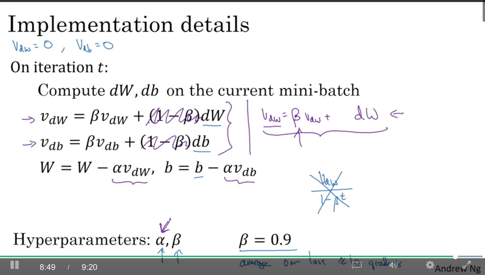

<!DOCTYPE html>
  <html>
    <head>
      <title>c2w2</title>
      <meta charset="utf-8">
      <meta name="viewport" content="width=device-width, initial-scale=1.0">
      
      <link rel="stylesheet" href="file:////Users/daiwenkai/.vscode/extensions/shd101wyy.markdown-preview-enhanced-0.3.2/node_modules/@shd101wyy/mume/dependencies/katex/katex.min.css">
      
      
      
      
      
      
      
      
      

      <style> 
      /**
 * prism.js Github theme based on GitHub's theme.
 * @author Sam Clarke
 */
code[class*="language-"],
pre[class*="language-"] {
  color: #333;
  background: none;
  font-family: Consolas, "Liberation Mono", Menlo, Courier, monospace;
  text-align: left;
  white-space: pre;
  word-spacing: normal;
  word-break: normal;
  word-wrap: normal;
  line-height: 1.4;

  -moz-tab-size: 8;
  -o-tab-size: 8;
  tab-size: 8;

  -webkit-hyphens: none;
  -moz-hyphens: none;
  -ms-hyphens: none;
  hyphens: none;
}

/* Code blocks */
pre[class*="language-"] {
  padding: .8em;
  overflow: auto;
  /* border: 1px solid #ddd; */
  border-radius: 3px;
  /* background: #fff; */
  background: #f5f5f5;
}

/* Inline code */
:not(pre) > code[class*="language-"] {
  padding: .1em;
  border-radius: .3em;
  white-space: normal;
  background: #f5f5f5;
}

.token.comment,
.token.blockquote {
  color: #969896;
}

.token.cdata {
  color: #183691;
}

.token.doctype,
.token.punctuation,
.token.variable,
.token.macro.property {
  color: #333;
}

.token.operator,
.token.important,
.token.keyword,
.token.rule,
.token.builtin {
  color: #a71d5d;
}

.token.string,
.token.url,
.token.regex,
.token.attr-value {
  color: #183691;
}

.token.property,
.token.number,
.token.boolean,
.token.entity,
.token.atrule,
.token.constant,
.token.symbol,
.token.command,
.token.code {
  color: #0086b3;
}

.token.tag,
.token.selector,
.token.prolog {
  color: #63a35c;
}

.token.function,
.token.namespace,
.token.pseudo-element,
.token.class,
.token.class-name,
.token.pseudo-class,
.token.id,
.token.url-reference .token.variable,
.token.attr-name {
  color: #795da3;
}

.token.entity {
  cursor: help;
}

.token.title,
.token.title .token.punctuation {
  font-weight: bold;
  color: #1d3e81;
}

.token.list {
  color: #ed6a43;
}

.token.inserted {
  background-color: #eaffea;
  color: #55a532;
}

.token.deleted {
  background-color: #ffecec;
  color: #bd2c00;
}

.token.bold {
  font-weight: bold;
}

.token.italic {
  font-style: italic;
}


/* JSON */
.language-json .token.property {
  color: #183691;
}

.language-markup .token.tag .token.punctuation {
  color: #333;
}

/* CSS */
code.language-css,
.language-css .token.function {
  color: #0086b3;
}

/* YAML */
.language-yaml .token.atrule {
  color: #63a35c;
}

code.language-yaml {
  color: #183691;
}

/* Ruby */
.language-ruby .token.function {
  color: #333;
}

/* Markdown */
.language-markdown .token.url {
  color: #795da3;
}

/* Makefile */
.language-makefile .token.symbol {
  color: #795da3;
}

.language-makefile .token.variable {
  color: #183691;
}

.language-makefile .token.builtin {
  color: #0086b3;
}

/* Bash */
.language-bash .token.keyword {
  color: #0086b3;
}html body{font-family:"Helvetica Neue",Helvetica,"Segoe UI",Arial,freesans,sans-serif;font-size:16px;line-height:1.6;color:#333;background-color:#fff;overflow:initial;box-sizing:border-box;word-wrap:break-word}html body>:first-child{margin-top:0}html body h1,html body h2,html body h3,html body h4,html body h5,html body h6{line-height:1.2;margin-top:1em;margin-bottom:16px;color:#000}html body h1{font-size:2.25em;font-weight:300;padding-bottom:.3em}html body h2{font-size:1.75em;font-weight:400;padding-bottom:.3em}html body h3{font-size:1.5em;font-weight:500}html body h4{font-size:1.25em;font-weight:600}html body h5{font-size:1.1em;font-weight:600}html body h6{font-size:1em;font-weight:600}html body h1,html body h2,html body h3,html body h4,html body h5{font-weight:600}html body h5{font-size:1em}html body h6{color:#5c5c5c}html body strong{color:#000}html body del{color:#5c5c5c}html body a:not([href]){color:inherit;text-decoration:none}html body a{color:#08c;text-decoration:none}html body a:hover{color:#00a3f5;text-decoration:none}html body img{max-width:100%}html body>p{margin-top:0;margin-bottom:16px;word-wrap:break-word}html body>ul,html body>ol{margin-bottom:16px}html body ul,html body ol{padding-left:2em}html body ul.no-list,html body ol.no-list{padding:0;list-style-type:none}html body ul ul,html body ul ol,html body ol ol,html body ol ul{margin-top:0;margin-bottom:0}html body li{margin-bottom:0}html body li.task-list-item{list-style:none}html body li>p{margin-top:0;margin-bottom:0}html body .task-list-item-checkbox{margin:0 .2em .25em -1.8em;vertical-align:middle}html body .task-list-item-checkbox:hover{cursor:pointer}html body blockquote{margin:16px 0;font-size:inherit;padding:0 15px;color:#5c5c5c;border-left:4px solid #d6d6d6}html body blockquote>:first-child{margin-top:0}html body blockquote>:last-child{margin-bottom:0}html body hr{height:4px;margin:32px 0;background-color:#d6d6d6;border:0 none}html body table{margin:10px 0 15px 0;border-collapse:collapse;border-spacing:0;display:block;width:100%;overflow:auto;word-break:normal;word-break:keep-all}html body table th{font-weight:bold;color:#000}html body table td,html body table th{border:1px solid #d6d6d6;padding:6px 13px}html body dl{padding:0}html body dl dt{padding:0;margin-top:16px;font-size:1em;font-style:italic;font-weight:bold}html body dl dd{padding:0 16px;margin-bottom:16px}html body code{font-family:Menlo,Monaco,Consolas,'Courier New',monospace;font-size:.85em !important;color:#000;background-color:#f0f0f0;border-radius:3px;padding:.2em 0}html body code::before,html body code::after{letter-spacing:-0.2em;content:"\00a0"}html body pre>code{padding:0;margin:0;font-size:.85em !important;word-break:normal;white-space:pre;background:transparent;border:0}html body .highlight{margin-bottom:16px}html body .highlight pre,html body pre{padding:1em;overflow:auto;font-size:.85em !important;line-height:1.45;border:#d6d6d6;border-radius:3px}html body .highlight pre{margin-bottom:0;word-break:normal}html body pre code,html body pre tt{display:inline;max-width:initial;padding:0;margin:0;overflow:initial;line-height:inherit;word-wrap:normal;background-color:transparent;border:0}html body pre code:before,html body pre tt:before,html body pre code:after,html body pre tt:after{content:normal}html body p,html body blockquote,html body ul,html body ol,html body dl,html body pre{margin-top:0;margin-bottom:16px}html body kbd{color:#000;border:1px solid #d6d6d6;border-bottom:2px solid #c7c7c7;padding:2px 4px;background-color:#f0f0f0;border-radius:3px}@media print{html body{background-color:#fff}html body h1,html body h2,html body h3,html body h4,html body h5,html body h6{color:#000;page-break-after:avoid}html body blockquote{color:#5c5c5c}html body pre{page-break-inside:avoid}html body table{display:table}html body img{display:block;max-width:100%;max-height:100%}html body pre,html body code{word-wrap:break-word;white-space:pre}}.markdown-preview{width:100%;height:100%;box-sizing:border-box}.markdown-preview .pagebreak,.markdown-preview .newpage{page-break-before:always}.markdown-preview pre.line-numbers{position:relative;padding-left:3.8em;counter-reset:linenumber}.markdown-preview pre.line-numbers>code{position:relative}.markdown-preview pre.line-numbers .line-numbers-rows{position:absolute;pointer-events:none;top:1em;font-size:100%;left:0;width:3em;letter-spacing:-1px;border-right:1px solid #999;-webkit-user-select:none;-moz-user-select:none;-ms-user-select:none;user-select:none}.markdown-preview pre.line-numbers .line-numbers-rows>span{pointer-events:none;display:block;counter-increment:linenumber}.markdown-preview pre.line-numbers .line-numbers-rows>span:before{content:counter(linenumber);color:#999;display:block;padding-right:.8em;text-align:right}.markdown-preview .mathjax-exps .MathJax_Display{text-align:center !important}.markdown-preview:not([for="preview"]) .code-chunk .btn-group{display:none}.markdown-preview:not([for="preview"]) .code-chunk .status{display:none}.markdown-preview:not([for="preview"]) .code-chunk .output-div{margin-bottom:16px}.scrollbar-style::-webkit-scrollbar{width:8px}.scrollbar-style::-webkit-scrollbar-track{border-radius:10px;background-color:transparent}.scrollbar-style::-webkit-scrollbar-thumb{border-radius:5px;background-color:rgba(150,150,150,0.66);border:4px solid rgba(150,150,150,0.66);background-clip:content-box}html body[for="html-export"]:not([data-presentation-mode]){position:relative;width:100%;height:100%;top:0;left:0;margin:0;padding:0;overflow:auto}html body[for="html-export"]:not([data-presentation-mode]) .markdown-preview{position:relative;top:0}@media screen and (min-width:914px){html body[for="html-export"]:not([data-presentation-mode]) .markdown-preview{padding:2em calc(50% - 457px)}}@media screen and (max-width:914px){html body[for="html-export"]:not([data-presentation-mode]) .markdown-preview{padding:2em}}@media screen and (max-width:450px){html body[for="html-export"]:not([data-presentation-mode]) .markdown-preview{font-size:14px !important;padding:1em}}@media print{html body[for="html-export"]:not([data-presentation-mode]) #sidebar-toc-btn{display:none}}html body[for="html-export"]:not([data-presentation-mode]) #sidebar-toc-btn{position:fixed;bottom:8px;left:8px;font-size:28px;cursor:pointer;color:inherit;z-index:99;width:32px;text-align:center;opacity:.4}html body[for="html-export"]:not([data-presentation-mode])[html-show-sidebar-toc] #sidebar-toc-btn{opacity:1}html body[for="html-export"]:not([data-presentation-mode])[html-show-sidebar-toc] .md-sidebar-toc{position:fixed;top:0;left:0;width:300px;height:100%;padding:32px 0 48px 0;font-size:14px;box-shadow:0 0 4px rgba(150,150,150,0.33);box-sizing:border-box;overflow:auto;background-color:inherit}html body[for="html-export"]:not([data-presentation-mode])[html-show-sidebar-toc] .md-sidebar-toc::-webkit-scrollbar{width:8px}html body[for="html-export"]:not([data-presentation-mode])[html-show-sidebar-toc] .md-sidebar-toc::-webkit-scrollbar-track{border-radius:10px;background-color:transparent}html body[for="html-export"]:not([data-presentation-mode])[html-show-sidebar-toc] .md-sidebar-toc::-webkit-scrollbar-thumb{border-radius:5px;background-color:rgba(150,150,150,0.66);border:4px solid rgba(150,150,150,0.66);background-clip:content-box}html body[for="html-export"]:not([data-presentation-mode])[html-show-sidebar-toc] .md-sidebar-toc a{text-decoration:none}html body[for="html-export"]:not([data-presentation-mode])[html-show-sidebar-toc] .md-sidebar-toc ul{padding:0 1.6em;margin-top:.8em}html body[for="html-export"]:not([data-presentation-mode])[html-show-sidebar-toc] .md-sidebar-toc li{margin-bottom:.8em}html body[for="html-export"]:not([data-presentation-mode])[html-show-sidebar-toc] .md-sidebar-toc ul{list-style-type:none}html body[for="html-export"]:not([data-presentation-mode])[html-show-sidebar-toc] .markdown-preview{left:300px;width:calc(100% -  300px);padding:2em calc(50% - 457px -  150px);margin:0;box-sizing:border-box}@media screen and (max-width:1274px){html body[for="html-export"]:not([data-presentation-mode])[html-show-sidebar-toc] .markdown-preview{padding:2em}}@media screen and (max-width:450px){html body[for="html-export"]:not([data-presentation-mode])[html-show-sidebar-toc] .markdown-preview{width:100%}}html body[for="html-export"]:not([data-presentation-mode]):not([html-show-sidebar-toc]) .markdown-preview{left:50%;transform:translateX(-50%)}html body[for="html-export"]:not([data-presentation-mode]):not([html-show-sidebar-toc]) .md-sidebar-toc{display:none}
/* Please visit the URL below for more information: */
/*   https://shd101wyy.github.io/markdown-preview-enhanced/#/customize-css */
 
      </style>
    </head>
    <body for="html-export">
      <div class="mume markdown-preview   ">
      <p>contents</p>
<ul>
<li><a href="#1-optimization-algorithms">1. optimization algorithms</a>
<ul>
<li><a href="#11-mini-batch-gradient-descent">1.1. mini-batch gradient descent</a></li>
<li><a href="#12-understanding-mini-batch-gradient-descent">1.2. understanding mini-batch gradient descent</a></li>
<li><a href="#13-exponentially-weighted-averages">1.3. exponentially weighted averages</a></li>
<li><a href="#14-understanding-exponentially-weighted-averages">1.4. understanding exponentially weighted averages</a></li>
<li><a href="#15-bias-correction-in-exponentially-weighted-averages">1.5. bias correction in exponentially weighted averages</a></li>
<li><a href="#16-gradient-descent-with-momentum">1.6. gradient descent with momentum</a></li>
<li><a href="#17-rmsprop">1.7. RMSprop</a></li>
<li><a href="#18-adam-optimization-algorithm">1.8. Adam optimization algorithm</a></li>
<li><a href="#19-learning-rate-decay">1.9. learning rate decay</a></li>
<li><a href="#110-the-problem-of-local-optima">1.10. the problem of local optima</a></li>
</ul>
</li>
</ul>
<h1 class="mume-header" id="1-optimization-algorithms">1. optimization algorithms</h1>

<h2 class="mume-header" id="11-mini-batch-gradient-descent">1.1. mini-batch gradient descent</h2>

<ul>
<li>batch gradient descent：遍历所有训练样本</li>
<li>mini-batch gradient descent：一次处理一个min-batch</li>
</ul>
<p>各符号的表示：</p>
<ul>
<li><span class="katex"><span class="katex-mathml"><math><semantics><mrow><msup><mi>X</mi><mrow><mo>(</mo><mi>i</mi><mo>)</mo></mrow></msup></mrow><annotation encoding="application/x-tex">X^{(i)}</annotation></semantics></math></span><span class="katex-html" aria-hidden="true"><span class="strut" style="height:0.8879999999999999em;"></span><span class="strut bottom" style="height:0.8879999999999999em;vertical-align:0em;"></span><span class="base"><span class="mord"><span class="mord mathit" style="margin-right:0.07847em;">X</span><span class="msupsub"><span class="vlist-t"><span class="vlist-r"><span class="vlist" style="height:0.8879999999999999em;"><span style="top:-3.063em;margin-right:0.05em;"><span class="pstrut" style="height:2.7em;"></span><span class="sizing reset-size6 size3 mtight"><span class="mord mtight"><span class="mopen mtight">(</span><span class="mord mathit mtight">i</span><span class="mclose mtight">)</span></span></span></span></span></span></span></span></span></span></span></span>表示第i个训练样本</li>
<li><span class="katex"><span class="katex-mathml"><math><semantics><mrow><msup><mi>z</mi><mrow><mo>[</mo><mi>l</mi><mo>]</mo></mrow></msup></mrow><annotation encoding="application/x-tex">z^{[l]}</annotation></semantics></math></span><span class="katex-html" aria-hidden="true"><span class="strut" style="height:0.8879999999999999em;"></span><span class="strut bottom" style="height:0.8879999999999999em;vertical-align:0em;"></span><span class="base"><span class="mord"><span class="mord mathit" style="margin-right:0.04398em;">z</span><span class="msupsub"><span class="vlist-t"><span class="vlist-r"><span class="vlist" style="height:0.8879999999999999em;"><span style="top:-3.063em;margin-right:0.05em;"><span class="pstrut" style="height:2.7em;"></span><span class="sizing reset-size6 size3 mtight"><span class="mord mtight"><span class="mopen mtight">[</span><span class="mord mathit mtight" style="margin-right:0.01968em;">l</span><span class="mclose mtight">]</span></span></span></span></span></span></span></span></span></span></span></span>表求第l层的激活函数的输入</li>
<li><span class="katex"><span class="katex-mathml"><math><semantics><mrow><msup><mi>X</mi><mrow><mo>{</mo><mi>t</mi><mo>}</mo></mrow></msup><mo separator="true">,</mo><msup><mi>Y</mi><mrow><mo>{</mo><mi>t</mi><mo>}</mo></mrow></msup></mrow><annotation encoding="application/x-tex">X^{\{t \}},Y^{\{t \}}</annotation></semantics></math></span><span class="katex-html" aria-hidden="true"><span class="strut" style="height:0.8879999999999999em;"></span><span class="strut bottom" style="height:1.0824399999999998em;vertical-align:-0.19444em;"></span><span class="base"><span class="mord"><span class="mord mathit" style="margin-right:0.07847em;">X</span><span class="msupsub"><span class="vlist-t"><span class="vlist-r"><span class="vlist" style="height:0.8879999999999999em;"><span style="top:-3.063em;margin-right:0.05em;"><span class="pstrut" style="height:2.7em;"></span><span class="sizing reset-size6 size3 mtight"><span class="mord mtight"><span class="mopen mtight">{</span><span class="mord mathit mtight">t</span><span class="mclose mtight">}</span></span></span></span></span></span></span></span></span><span class="mpunct">,</span><span class="mord"><span class="mord mathit" style="margin-right:0.22222em;">Y</span><span class="msupsub"><span class="vlist-t"><span class="vlist-r"><span class="vlist" style="height:0.8879999999999999em;"><span style="top:-3.063em;margin-right:0.05em;"><span class="pstrut" style="height:2.7em;"></span><span class="sizing reset-size6 size3 mtight"><span class="mord mtight"><span class="mopen mtight">{</span><span class="mord mathit mtight">t</span><span class="mclose mtight">}</span></span></span></span></span></span></span></span></span></span></span></span>表示第t个mini-batch的样本</li>
</ul>
<p></p>
<p>假设有5000000个样本，那么在一个epoch中，遍历5000个mini-batch，每个mini-batch（1000个样本）中【一个iteration】，先前向计算，然后算这1000个样本的loss，然后反向传播。</p>
<p>注意：一个mini-batch就反向传播一次，更新一次参数，所以一个epoch就更新了5000次参数。</p>
<p></p>
<h2 class="mume-header" id="12-understanding-mini-batch-gradient-descent">1.2. understanding mini-batch gradient descent</h2>

<p>可见，使用mini-batch的cost会有不小的抖动和噪音。</p>
<p></p>
<ul>
<li>batchsize=m: batch gradient descent。一般可以顺利到达min。但耗时长。</li>
<li>batchsize=1: stochastic gradient descent。很可能在min附近徘徊。而且失去了vectorization可以带来了加速</li>
<li>batchsize between 1,m:
<ul>
<li>充分利用vectorization</li>
<li>make progress without processing entire training set</li>
</ul>
</li>
</ul>
<p></p>
<ul>
<li>训练集很小时（m&lt;=2000）：使用batch gradient descent</li>
<li>其他情况下，经典的batchsize：2的指数（64,128,256,512），一般比较少用1024，非2的指数也比较少用（如1000）</li>
<li>make sure mini-batch里的<span class="katex"><span class="katex-mathml"><math><semantics><mrow><msup><mi>X</mi><mrow><mo>{</mo><mi>t</mi><mo>}</mo></mrow></msup><mo separator="true">,</mo><msup><mi>Y</mi><mrow><mo>{</mo><mi>t</mi><mo>}</mo></mrow></msup></mrow><annotation encoding="application/x-tex">X^{\{t\}},Y^{\{t\}}</annotation></semantics></math></span><span class="katex-html" aria-hidden="true"><span class="strut" style="height:0.8879999999999999em;"></span><span class="strut bottom" style="height:1.0824399999999998em;vertical-align:-0.19444em;"></span><span class="base"><span class="mord"><span class="mord mathit" style="margin-right:0.07847em;">X</span><span class="msupsub"><span class="vlist-t"><span class="vlist-r"><span class="vlist" style="height:0.8879999999999999em;"><span style="top:-3.063em;margin-right:0.05em;"><span class="pstrut" style="height:2.7em;"></span><span class="sizing reset-size6 size3 mtight"><span class="mord mtight"><span class="mopen mtight">{</span><span class="mord mathit mtight">t</span><span class="mclose mtight">}</span></span></span></span></span></span></span></span></span><span class="mpunct">,</span><span class="mord"><span class="mord mathit" style="margin-right:0.22222em;">Y</span><span class="msupsub"><span class="vlist-t"><span class="vlist-r"><span class="vlist" style="height:0.8879999999999999em;"><span style="top:-3.063em;margin-right:0.05em;"><span class="pstrut" style="height:2.7em;"></span><span class="sizing reset-size6 size3 mtight"><span class="mord mtight"><span class="mopen mtight">{</span><span class="mord mathit mtight">t</span><span class="mclose mtight">}</span></span></span></span></span></span></span></span></span></span></span></span>能够在cpu/gpu中被容纳下</li>
</ul>
<p></p>
<h2 class="mume-header" id="13-exponentially-weighted-averages">1.3. exponentially weighted averages</h2>

<p>比gradient descent更快的算法大多使用指数平滑类的算法。通过图中<span class="katex"><span class="katex-mathml"><math><semantics><mrow><msub><mi>v</mi><mi>t</mi></msub></mrow><annotation encoding="application/x-tex">v_t</annotation></semantics></math></span><span class="katex-html" aria-hidden="true"><span class="strut" style="height:0.43056em;"></span><span class="strut bottom" style="height:0.58056em;vertical-align:-0.15em;"></span><span class="base"><span class="mord"><span class="mord mathit" style="margin-right:0.03588em;">v</span><span class="msupsub"><span class="vlist-t vlist-t2"><span class="vlist-r"><span class="vlist" style="height:0.2805559999999999em;"><span style="top:-2.5500000000000003em;margin-left:-0.03588em;margin-right:0.05em;"><span class="pstrut" style="height:2.7em;"></span><span class="sizing reset-size6 size3 mtight"><span class="mord mathit mtight">t</span></span></span></span><span class="vlist-s">​</span></span><span class="vlist-r"><span class="vlist" style="height:0.15em;"></span></span></span></span></span></span></span></span>的计算，可以得到图中的红线，即exponentially weighted (moving) average</p>
<p></p>
<p><span class="katex-display"><span class="katex"><span class="katex-mathml"><math><semantics><mrow><msub><mi>v</mi><mi>t</mi></msub><mo>=</mo><mi>β</mi><msub><mi>v</mi><mrow><mi>t</mi><mo>−</mo><mn>1</mn></mrow></msub><mo>+</mo><mo>(</mo><mn>1</mn><mo>−</mo><mi>β</mi><mo>)</mo><msub><mi>θ</mi><mi>t</mi></msub></mrow><annotation encoding="application/x-tex">v_t=\beta v_{t-1}+(1-\beta)\theta_t</annotation></semantics></math></span><span class="katex-html" aria-hidden="true"><span class="strut" style="height:0.75em;"></span><span class="strut bottom" style="height:1em;vertical-align:-0.25em;"></span><span class="base"><span class="mord"><span class="mord mathit" style="margin-right:0.03588em;">v</span><span class="msupsub"><span class="vlist-t vlist-t2"><span class="vlist-r"><span class="vlist" style="height:0.2805559999999999em;"><span style="top:-2.5500000000000003em;margin-left:-0.03588em;margin-right:0.05em;"><span class="pstrut" style="height:2.7em;"></span><span class="sizing reset-size6 size3 mtight"><span class="mord mathit mtight">t</span></span></span></span><span class="vlist-s">​</span></span><span class="vlist-r"><span class="vlist" style="height:0.15em;"></span></span></span></span></span><span class="mrel">=</span><span class="mord mathit" style="margin-right:0.05278em;">β</span><span class="mord"><span class="mord mathit" style="margin-right:0.03588em;">v</span><span class="msupsub"><span class="vlist-t vlist-t2"><span class="vlist-r"><span class="vlist" style="height:0.301108em;"><span style="top:-2.5500000000000003em;margin-left:-0.03588em;margin-right:0.05em;"><span class="pstrut" style="height:2.7em;"></span><span class="sizing reset-size6 size3 mtight"><span class="mord mtight"><span class="mord mathit mtight">t</span><span class="mbin mtight">−</span><span class="mord mathrm mtight">1</span></span></span></span></span><span class="vlist-s">​</span></span><span class="vlist-r"><span class="vlist" style="height:0.208331em;"></span></span></span></span></span><span class="mbin">+</span><span class="mopen">(</span><span class="mord mathrm">1</span><span class="mbin">−</span><span class="mord mathit" style="margin-right:0.05278em;">β</span><span class="mclose">)</span><span class="mord"><span class="mord mathit" style="margin-right:0.02778em;">θ</span><span class="msupsub"><span class="vlist-t vlist-t2"><span class="vlist-r"><span class="vlist" style="height:0.2805559999999999em;"><span style="top:-2.5500000000000003em;margin-left:-0.02778em;margin-right:0.05em;"><span class="pstrut" style="height:2.7em;"></span><span class="sizing reset-size6 size3 mtight"><span class="mord mathit mtight">t</span></span></span></span><span class="vlist-s">​</span></span><span class="vlist-r"><span class="vlist" style="height:0.15em;"></span></span></span></span></span></span></span></span></span></p>
<p><strong>注意，<span class="katex"><span class="katex-mathml"><math><semantics><mrow><mi>β</mi></mrow><annotation encoding="application/x-tex">\beta</annotation></semantics></math></span><span class="katex-html" aria-hidden="true"><span class="strut" style="height:0.69444em;"></span><span class="strut bottom" style="height:0.8888799999999999em;vertical-align:-0.19444em;"></span><span class="base"><span class="mord mathit" style="margin-right:0.05278em;">β</span></span></span></span>对应的是<span class="katex"><span class="katex-mathml"><math><semantics><mrow><msub><mi>v</mi><mrow><mi>t</mi><mo>−</mo><mn>1</mn></mrow></msub></mrow><annotation encoding="application/x-tex">v_{t-1}</annotation></semantics></math></span><span class="katex-html" aria-hidden="true"><span class="strut" style="height:0.43056em;"></span><span class="strut bottom" style="height:0.638891em;vertical-align:-0.208331em;"></span><span class="base"><span class="mord"><span class="mord mathit" style="margin-right:0.03588em;">v</span><span class="msupsub"><span class="vlist-t vlist-t2"><span class="vlist-r"><span class="vlist" style="height:0.301108em;"><span style="top:-2.5500000000000003em;margin-left:-0.03588em;margin-right:0.05em;"><span class="pstrut" style="height:2.7em;"></span><span class="sizing reset-size6 size3 mtight"><span class="mord mtight"><span class="mord mathit mtight">t</span><span class="mbin mtight">−</span><span class="mord mathrm mtight">1</span></span></span></span></span><span class="vlist-s">​</span></span><span class="vlist-r"><span class="vlist" style="height:0.208331em;"></span></span></span></span></span></span></span></span>，而<span class="katex"><span class="katex-mathml"><math><semantics><mrow><mn>1</mn><mo>−</mo><mi>β</mi></mrow><annotation encoding="application/x-tex">1-\beta</annotation></semantics></math></span><span class="katex-html" aria-hidden="true"><span class="strut" style="height:0.69444em;"></span><span class="strut bottom" style="height:0.8888799999999999em;vertical-align:-0.19444em;"></span><span class="base"><span class="mord mathrm">1</span><span class="mbin">−</span><span class="mord mathit" style="margin-right:0.05278em;">β</span></span></span></span>对应的是<span class="katex"><span class="katex-mathml"><math><semantics><mrow><msub><mi>θ</mi><mi>t</mi></msub></mrow><annotation encoding="application/x-tex">\theta_t</annotation></semantics></math></span><span class="katex-html" aria-hidden="true"><span class="strut" style="height:0.69444em;"></span><span class="strut bottom" style="height:0.84444em;vertical-align:-0.15em;"></span><span class="base"><span class="mord"><span class="mord mathit" style="margin-right:0.02778em;">θ</span><span class="msupsub"><span class="vlist-t vlist-t2"><span class="vlist-r"><span class="vlist" style="height:0.2805559999999999em;"><span style="top:-2.5500000000000003em;margin-left:-0.02778em;margin-right:0.05em;"><span class="pstrut" style="height:2.7em;"></span><span class="sizing reset-size6 size3 mtight"><span class="mord mathit mtight">t</span></span></span></span><span class="vlist-s">​</span></span><span class="vlist-r"><span class="vlist" style="height:0.15em;"></span></span></span></span></span></span></span></span>。</strong></p>
<p>而，曲线描绘了过去大约<span class="katex"><span class="katex-mathml"><math><semantics><mrow><mfrac><mrow><mn>1</mn></mrow><mrow><mn>1</mn><mo>−</mo><mi>β</mi></mrow></mfrac></mrow><annotation encoding="application/x-tex">\frac{1}{1-\beta}</annotation></semantics></math></span><span class="katex-html" aria-hidden="true"><span class="strut" style="height:0.845108em;"></span><span class="strut bottom" style="height:1.326216em;vertical-align:-0.481108em;"></span><span class="base"><span class="mord"><span class="mopen nulldelimiter"></span><span class="mfrac"><span class="vlist-t vlist-t2"><span class="vlist-r"><span class="vlist" style="height:0.845108em;"><span style="top:-2.6550000000000002em;"><span class="pstrut" style="height:3em;"></span><span class="sizing reset-size6 size3 mtight"><span class="mord mtight"><span class="mord mathrm mtight">1</span><span class="mbin mtight">−</span><span class="mord mathit mtight" style="margin-right:0.05278em;">β</span></span></span></span><span style="top:-3.23em;"><span class="pstrut" style="height:3em;"></span><span class="frac-line" style="border-bottom-width:0.04em;"></span></span><span style="top:-3.394em;"><span class="pstrut" style="height:3em;"></span><span class="sizing reset-size6 size3 mtight"><span class="mord mtight"><span class="mord mathrm mtight">1</span></span></span></span></span><span class="vlist-s">​</span></span><span class="vlist-r"><span class="vlist" style="height:0.481108em;"></span></span></span></span><span class="mclose nulldelimiter"></span></span></span></span></span>天的变量取值的平均情况，所以，<span class="katex"><span class="katex-mathml"><math><semantics><mrow><mi>β</mi></mrow><annotation encoding="application/x-tex">\beta</annotation></semantics></math></span><span class="katex-html" aria-hidden="true"><span class="strut" style="height:0.69444em;"></span><span class="strut bottom" style="height:0.8888799999999999em;vertical-align:-0.19444em;"></span><span class="base"><span class="mord mathit" style="margin-right:0.05278em;">β</span></span></span></span>越大，窗口越大，曲线越滞后，对变量的变化也越不敏感。图中，红线是0.9[相当于过去10天]，绿线是0.98[相当于过去50天]，黄线是0.5[相当于过去2天]。还有一个常用的是0.99[相当于过去100天]。</p>
<p></p>
<h2 class="mume-header" id="14-understanding-exponentially-weighted-averages">1.4. understanding exponentially weighted averages</h2>

<p><span class="katex"><span class="katex-mathml"><math><semantics><mrow><mo>(</mo><mn>1</mn><mo>−</mo><mi>ϵ</mi><msup><mo>)</mo><mrow><mn>1</mn><mi mathvariant="normal">/</mi><mi>ϵ</mi></mrow></msup></mrow><annotation encoding="application/x-tex">(1-\epsilon)^{1/\epsilon}</annotation></semantics></math></span><span class="katex-html" aria-hidden="true"><span class="strut" style="height:0.8879999999999999em;"></span><span class="strut bottom" style="height:1.138em;vertical-align:-0.25em;"></span><span class="base"><span class="mopen">(</span><span class="mord mathrm">1</span><span class="mbin">−</span><span class="mord mathit">ϵ</span><span class="mclose"><span class="mclose">)</span><span class="msupsub"><span class="vlist-t"><span class="vlist-r"><span class="vlist" style="height:0.8879999999999999em;"><span style="top:-3.063em;margin-right:0.05em;"><span class="pstrut" style="height:2.7em;"></span><span class="sizing reset-size6 size3 mtight"><span class="mord mtight"><span class="mord mathrm mtight">1</span><span class="mord mathrm mtight">/</span><span class="mord mathit mtight">ϵ</span></span></span></span></span></span></span></span></span></span></span></span>约等于<span class="katex"><span class="katex-mathml"><math><semantics><mrow><mn>1</mn><mi mathvariant="normal">/</mi><mi>e</mi></mrow><annotation encoding="application/x-tex">1/e</annotation></semantics></math></span><span class="katex-html" aria-hidden="true"><span class="strut" style="height:0.75em;"></span><span class="strut bottom" style="height:1em;vertical-align:-0.25em;"></span><span class="base"><span class="mord mathrm">1</span><span class="mord mathrm">/</span><span class="mord mathit">e</span></span></span></span>，而<span class="katex"><span class="katex-mathml"><math><semantics><mrow><mi>ϵ</mi><mo>=</mo><mn>1</mn><mo>−</mo><mi>β</mi></mrow><annotation encoding="application/x-tex">\epsilon=1-\beta</annotation></semantics></math></span><span class="katex-html" aria-hidden="true"><span class="strut" style="height:0.69444em;"></span><span class="strut bottom" style="height:0.8888799999999999em;vertical-align:-0.19444em;"></span><span class="base"><span class="mord mathit">ϵ</span><span class="mrel">=</span><span class="mord mathrm">1</span><span class="mbin">−</span><span class="mord mathit" style="margin-right:0.05278em;">β</span></span></span></span>。所以是<span class="katex"><span class="katex-mathml"><math><semantics><mrow><msup><mi>β</mi><mrow><mn>1</mn><mi mathvariant="normal">/</mi><mo>(</mo><mn>1</mn><mo>−</mo><mi>β</mi><mo>)</mo></mrow></msup></mrow><annotation encoding="application/x-tex">{\beta}^{1/(1-\beta)}</annotation></semantics></math></span><span class="katex-html" aria-hidden="true"><span class="strut" style="height:0.8879999999999999em;"></span><span class="strut bottom" style="height:1.0824399999999998em;vertical-align:-0.19444em;"></span><span class="base"><span class="mord"><span class="mord"><span class="mord mathit" style="margin-right:0.05278em;">β</span></span><span class="msupsub"><span class="vlist-t"><span class="vlist-r"><span class="vlist" style="height:0.8879999999999999em;"><span style="top:-3.063em;margin-right:0.05em;"><span class="pstrut" style="height:2.7em;"></span><span class="sizing reset-size6 size3 mtight"><span class="mord mtight"><span class="mord mathrm mtight">1</span><span class="mord mathrm mtight">/</span><span class="mopen mtight">(</span><span class="mord mathrm mtight">1</span><span class="mbin mtight">−</span><span class="mord mathit mtight" style="margin-right:0.05278em;">β</span><span class="mclose mtight">)</span></span></span></span></span></span></span></span></span></span></span></span>，所以前面提到，大约是<span class="katex"><span class="katex-mathml"><math><semantics><mrow><mn>1</mn><mi mathvariant="normal">/</mi><mo>(</mo><mn>1</mn><mo>−</mo><mi>β</mi><mo>)</mo></mrow><annotation encoding="application/x-tex">1/(1-\beta)</annotation></semantics></math></span><span class="katex-html" aria-hidden="true"><span class="strut" style="height:0.75em;"></span><span class="strut bottom" style="height:1em;vertical-align:-0.25em;"></span><span class="base"><span class="mord mathrm">1</span><span class="mord mathrm">/</span><span class="mopen">(</span><span class="mord mathrm">1</span><span class="mbin">−</span><span class="mord mathit" style="margin-right:0.05278em;">β</span><span class="mclose">)</span></span></span></span>天</p>
<p></p>
<p>好处：</p>
<ul>
<li>计算简单</li>
<li>省内存（只需要存一个变量v就行了）</li>
</ul>
<p></p>
<h2 class="mume-header" id="15-bias-correction-in-exponentially-weighted-averages">1.5. bias correction in exponentially weighted averages</h2>

<p>当<span class="katex"><span class="katex-mathml"><math><semantics><mrow><mi>β</mi><mo>=</mo><mn>0</mn><mi mathvariant="normal">.</mi><mn>9</mn><mn>8</mn></mrow><annotation encoding="application/x-tex">\beta=0.98</annotation></semantics></math></span><span class="katex-html" aria-hidden="true"><span class="strut" style="height:0.69444em;"></span><span class="strut bottom" style="height:0.8888799999999999em;vertical-align:-0.19444em;"></span><span class="base"><span class="mord mathit" style="margin-right:0.05278em;">β</span><span class="mrel">=</span><span class="mord mathrm">0</span><span class="mord mathrm">.</span><span class="mord mathrm">9</span><span class="mord mathrm">8</span></span></span></span>时理论上应该得到绿线，但实际得到的往往是紫线（因为v初始是0，所以而<span class="katex"><span class="katex-mathml"><math><semantics><mrow><mi>β</mi></mrow><annotation encoding="application/x-tex">\beta</annotation></semantics></math></span><span class="katex-html" aria-hidden="true"><span class="strut" style="height:0.69444em;"></span><span class="strut bottom" style="height:0.8888799999999999em;vertical-align:-0.19444em;"></span><span class="base"><span class="mord mathit" style="margin-right:0.05278em;">β</span></span></span></span>接近1，所以起始的几个值都比较小，所以起点比较低），通过bias correction可以从紫线纠正到绿线。</p>
<p><span class="katex"><span class="katex-mathml"><math><semantics><mrow><msub><mi>v</mi><mi>t</mi></msub><mo>=</mo><mfrac><mrow><msub><mi>v</mi><mi>t</mi></msub></mrow><mrow><mn>1</mn><mo>−</mo><msup><mi>β</mi><mi>t</mi></msup></mrow></mfrac></mrow><annotation encoding="application/x-tex">v_t=\frac{v_t}{1-\beta^t}</annotation></semantics></math></span><span class="katex-html" aria-hidden="true"><span class="strut" style="height:0.7114919999999999em;"></span><span class="strut bottom" style="height:1.1925999999999999em;vertical-align:-0.481108em;"></span><span class="base"><span class="mord"><span class="mord mathit" style="margin-right:0.03588em;">v</span><span class="msupsub"><span class="vlist-t vlist-t2"><span class="vlist-r"><span class="vlist" style="height:0.2805559999999999em;"><span style="top:-2.5500000000000003em;margin-left:-0.03588em;margin-right:0.05em;"><span class="pstrut" style="height:2.7em;"></span><span class="sizing reset-size6 size3 mtight"><span class="mord mathit mtight">t</span></span></span></span><span class="vlist-s">​</span></span><span class="vlist-r"><span class="vlist" style="height:0.15em;"></span></span></span></span></span><span class="mrel">=</span><span class="mord"><span class="mopen nulldelimiter"></span><span class="mfrac"><span class="vlist-t vlist-t2"><span class="vlist-r"><span class="vlist" style="height:0.7114919999999999em;"><span style="top:-2.6550000000000002em;"><span class="pstrut" style="height:3em;"></span><span class="sizing reset-size6 size3 mtight"><span class="mord mtight"><span class="mord mathrm mtight">1</span><span class="mbin mtight">−</span><span class="mord mtight"><span class="mord mathit mtight" style="margin-right:0.05278em;">β</span><span class="msupsub"><span class="vlist-t"><span class="vlist-r"><span class="vlist" style="height:0.7253428571428571em;"><span style="top:-2.786em;margin-right:0.07142857142857144em;"><span class="pstrut" style="height:2.5em;"></span><span class="sizing reset-size3 size1 mtight"><span class="mord mathit mtight">t</span></span></span></span></span></span></span></span></span></span></span><span style="top:-3.23em;"><span class="pstrut" style="height:3em;"></span><span class="frac-line" style="border-bottom-width:0.04em;"></span></span><span style="top:-3.4101em;"><span class="pstrut" style="height:3em;"></span><span class="sizing reset-size6 size3 mtight"><span class="mord mtight"><span class="mord mtight"><span class="mord mathit mtight" style="margin-right:0.03588em;">v</span><span class="msupsub"><span class="vlist-t vlist-t2"><span class="vlist-r"><span class="vlist" style="height:0.29634285714285713em;"><span style="top:-2.357em;margin-left:-0.03588em;margin-right:0.07142857142857144em;"><span class="pstrut" style="height:2.5em;"></span><span class="sizing reset-size3 size1 mtight"><span class="mord mathit mtight">t</span></span></span></span><span class="vlist-s">​</span></span><span class="vlist-r"><span class="vlist" style="height:0.143em;"></span></span></span></span></span></span></span></span></span><span class="vlist-s">​</span></span><span class="vlist-r"><span class="vlist" style="height:0.481108em;"></span></span></span></span><span class="mclose nulldelimiter"></span></span></span></span></span>，因为<span class="katex"><span class="katex-mathml"><math><semantics><mrow><mn>0</mn><mo>&lt;</mo><mi>β</mi><mo>&lt;</mo><mn>1</mn></mrow><annotation encoding="application/x-tex">0&lt;\beta&lt;1</annotation></semantics></math></span><span class="katex-html" aria-hidden="true"><span class="strut" style="height:0.69444em;"></span><span class="strut bottom" style="height:0.8888799999999999em;vertical-align:-0.19444em;"></span><span class="base"><span class="mord mathrm">0</span><span class="mrel">&lt;</span><span class="mord mathit" style="margin-right:0.05278em;">β</span><span class="mrel">&lt;</span><span class="mord mathrm">1</span></span></span></span>，所以t越大，<span class="katex"><span class="katex-mathml"><math><semantics><mrow><msup><mi>β</mi><mi>t</mi></msup></mrow><annotation encoding="application/x-tex">\beta^t</annotation></semantics></math></span><span class="katex-html" aria-hidden="true"><span class="strut" style="height:0.7935559999999999em;"></span><span class="strut bottom" style="height:0.9879959999999999em;vertical-align:-0.19444em;"></span><span class="base"><span class="mord"><span class="mord mathit" style="margin-right:0.05278em;">β</span><span class="msupsub"><span class="vlist-t"><span class="vlist-r"><span class="vlist" style="height:0.7935559999999999em;"><span style="top:-3.063em;margin-right:0.05em;"><span class="pstrut" style="height:2.7em;"></span><span class="sizing reset-size6 size3 mtight"><span class="mord mathit mtight">t</span></span></span></span></span></span></span></span></span></span></span>越小，分母越大，所以<span class="katex"><span class="katex-mathml"><math><semantics><mrow><msub><mi>v</mi><mi>t</mi></msub></mrow><annotation encoding="application/x-tex">v_t</annotation></semantics></math></span><span class="katex-html" aria-hidden="true"><span class="strut" style="height:0.43056em;"></span><span class="strut bottom" style="height:0.58056em;vertical-align:-0.15em;"></span><span class="base"><span class="mord"><span class="mord mathit" style="margin-right:0.03588em;">v</span><span class="msupsub"><span class="vlist-t vlist-t2"><span class="vlist-r"><span class="vlist" style="height:0.2805559999999999em;"><span style="top:-2.5500000000000003em;margin-left:-0.03588em;margin-right:0.05em;"><span class="pstrut" style="height:2.7em;"></span><span class="sizing reset-size6 size3 mtight"><span class="mord mathit mtight">t</span></span></span></span><span class="vlist-s">​</span></span><span class="vlist-r"><span class="vlist" style="height:0.15em;"></span></span></span></span></span></span></span></span>越小。反之，t越小，<span class="katex"><span class="katex-mathml"><math><semantics><mrow><msub><mi>v</mi><mi>t</mi></msub></mrow><annotation encoding="application/x-tex">v_t</annotation></semantics></math></span><span class="katex-html" aria-hidden="true"><span class="strut" style="height:0.43056em;"></span><span class="strut bottom" style="height:0.58056em;vertical-align:-0.15em;"></span><span class="base"><span class="mord"><span class="mord mathit" style="margin-right:0.03588em;">v</span><span class="msupsub"><span class="vlist-t vlist-t2"><span class="vlist-r"><span class="vlist" style="height:0.2805559999999999em;"><span style="top:-2.5500000000000003em;margin-left:-0.03588em;margin-right:0.05em;"><span class="pstrut" style="height:2.7em;"></span><span class="sizing reset-size6 size3 mtight"><span class="mord mathit mtight">t</span></span></span></span><span class="vlist-s">​</span></span><span class="vlist-r"><span class="vlist" style="height:0.15em;"></span></span></span></span></span></span></span></span>越大，就可以补上前面提到的t比较小时较低的起点。</p>
<p></p>
<h2 class="mume-header" id="16-gradient-descent-with-momentum">1.6. gradient descent with momentum</h2>

<p>如果learning rate太大，可能出现紫线的情况，波动太大（oscillation，振动，波动）。所以，希望纵向slower，而橫向faster。</p>
<p>所谓momentum，就是对dW和db，分别使用exponentially weighted average，计算对应的<span class="katex"><span class="katex-mathml"><math><semantics><mrow><msub><mi>v</mi><mrow><mi>d</mi><mi>W</mi></mrow></msub></mrow><annotation encoding="application/x-tex">v_{dW}</annotation></semantics></math></span><span class="katex-html" aria-hidden="true"><span class="strut" style="height:0.43056em;"></span><span class="strut bottom" style="height:0.58056em;vertical-align:-0.15em;"></span><span class="base"><span class="mord"><span class="mord mathit" style="margin-right:0.03588em;">v</span><span class="msupsub"><span class="vlist-t vlist-t2"><span class="vlist-r"><span class="vlist" style="height:0.33610799999999996em;"><span style="top:-2.5500000000000003em;margin-left:-0.03588em;margin-right:0.05em;"><span class="pstrut" style="height:2.7em;"></span><span class="sizing reset-size6 size3 mtight"><span class="mord mtight"><span class="mord mathit mtight">d</span><span class="mord mathit mtight" style="margin-right:0.13889em;">W</span></span></span></span></span><span class="vlist-s">​</span></span><span class="vlist-r"><span class="vlist" style="height:0.15em;"></span></span></span></span></span></span></span></span>和<span class="katex"><span class="katex-mathml"><math><semantics><mrow><msub><mi>v</mi><mrow><mi>d</mi><mi>b</mi></mrow></msub></mrow><annotation encoding="application/x-tex">v_{db}</annotation></semantics></math></span><span class="katex-html" aria-hidden="true"><span class="strut" style="height:0.43056em;"></span><span class="strut bottom" style="height:0.58056em;vertical-align:-0.15em;"></span><span class="base"><span class="mord"><span class="mord mathit" style="margin-right:0.03588em;">v</span><span class="msupsub"><span class="vlist-t vlist-t2"><span class="vlist-r"><span class="vlist" style="height:0.33610799999999996em;"><span style="top:-2.5500000000000003em;margin-left:-0.03588em;margin-right:0.05em;"><span class="pstrut" style="height:2.7em;"></span><span class="sizing reset-size6 size3 mtight"><span class="mord mtight"><span class="mord mathit mtight">d</span><span class="mord mathit mtight">b</span></span></span></span></span><span class="vlist-s">​</span></span><span class="vlist-r"><span class="vlist" style="height:0.15em;"></span></span></span></span></span></span></span></span>，更新时，用这两个v替换掉原来的dW和db。</p>
<p>这样，能够在横向上保持方向不变，而在纵向上，有『平滑』的效果，减少波动。</p>
<p>公式中，<span class="katex"><span class="katex-mathml"><math><semantics><mrow><mi>d</mi><mi>W</mi></mrow><annotation encoding="application/x-tex">dW</annotation></semantics></math></span><span class="katex-html" aria-hidden="true"><span class="strut" style="height:0.69444em;"></span><span class="strut bottom" style="height:0.69444em;vertical-align:0em;"></span><span class="base"><span class="mord mathit">d</span><span class="mord mathit" style="margin-right:0.13889em;">W</span></span></span></span>相当于加速度，<span class="katex"><span class="katex-mathml"><math><semantics><mrow><msub><mi>v</mi><mi>t</mi></msub></mrow><annotation encoding="application/x-tex">v_{t}</annotation></semantics></math></span><span class="katex-html" aria-hidden="true"><span class="strut" style="height:0.43056em;"></span><span class="strut bottom" style="height:0.58056em;vertical-align:-0.15em;"></span><span class="base"><span class="mord"><span class="mord mathit" style="margin-right:0.03588em;">v</span><span class="msupsub"><span class="vlist-t vlist-t2"><span class="vlist-r"><span class="vlist" style="height:0.2805559999999999em;"><span style="top:-2.5500000000000003em;margin-left:-0.03588em;margin-right:0.05em;"><span class="pstrut" style="height:2.7em;"></span><span class="sizing reset-size6 size3 mtight"><span class="mord mtight"><span class="mord mathit mtight">t</span></span></span></span></span><span class="vlist-s">​</span></span><span class="vlist-r"><span class="vlist" style="height:0.15em;"></span></span></span></span></span></span></span></span>相当于速度(velocity)，<span class="katex"><span class="katex-mathml"><math><semantics><mrow><mi>β</mi></mrow><annotation encoding="application/x-tex">\beta</annotation></semantics></math></span><span class="katex-html" aria-hidden="true"><span class="strut" style="height:0.69444em;"></span><span class="strut bottom" style="height:0.8888799999999999em;vertical-align:-0.19444em;"></span><span class="base"><span class="mord mathit" style="margin-right:0.05278em;">β</span></span></span></span>相当于摩擦力（friction）</p>
<p></p>
<p>实现时的几个注意点：</p>
<ul>
<li>最常取的<span class="katex"><span class="katex-mathml"><math><semantics><mrow><mi>β</mi><mo>=</mo><mn>0</mn><mi mathvariant="normal">.</mi><mn>9</mn></mrow><annotation encoding="application/x-tex">\beta=0.9</annotation></semantics></math></span><span class="katex-html" aria-hidden="true"><span class="strut" style="height:0.69444em;"></span><span class="strut bottom" style="height:0.8888799999999999em;vertical-align:-0.19444em;"></span><span class="base"><span class="mord mathit" style="margin-right:0.05278em;">β</span><span class="mrel">=</span><span class="mord mathrm">0</span><span class="mord mathrm">.</span><span class="mord mathrm">9</span></span></span></span>，也就是相当于最近10个iterations的gradients。</li>
<li>而且不一定会用bias correction(<span class="katex"><span class="katex-mathml"><math><semantics><mrow><mfrac><mrow><msub><mi>v</mi><mrow><mi>d</mi><mi>W</mi></mrow></msub></mrow><mrow><mn>1</mn><mo>−</mo><msup><mi>β</mi><mi>t</mi></msup></mrow></mfrac></mrow><annotation encoding="application/x-tex">\frac{v_{dW}}{1-\beta^t}</annotation></semantics></math></span><span class="katex-html" aria-hidden="true"><span class="strut" style="height:0.717252em;"></span><span class="strut bottom" style="height:1.19836em;vertical-align:-0.481108em;"></span><span class="base"><span class="mord"><span class="mopen nulldelimiter"></span><span class="mfrac"><span class="vlist-t vlist-t2"><span class="vlist-r"><span class="vlist" style="height:0.717252em;"><span style="top:-2.6550000000000002em;"><span class="pstrut" style="height:3em;"></span><span class="sizing reset-size6 size3 mtight"><span class="mord mtight"><span class="mord mathrm mtight">1</span><span class="mbin mtight">−</span><span class="mord mtight"><span class="mord mathit mtight" style="margin-right:0.05278em;">β</span><span class="msupsub"><span class="vlist-t"><span class="vlist-r"><span class="vlist" style="height:0.7253428571428571em;"><span style="top:-2.786em;margin-right:0.07142857142857144em;"><span class="pstrut" style="height:2.5em;"></span><span class="sizing reset-size3 size1 mtight"><span class="mord mathit mtight">t</span></span></span></span></span></span></span></span></span></span></span><span style="top:-3.23em;"><span class="pstrut" style="height:3em;"></span><span class="frac-line" style="border-bottom-width:0.04em;"></span></span><span style="top:-3.41586em;"><span class="pstrut" style="height:3em;"></span><span class="sizing reset-size6 size3 mtight"><span class="mord mtight"><span class="mord mtight"><span class="mord mathit mtight" style="margin-right:0.03588em;">v</span><span class="msupsub"><span class="vlist-t vlist-t2"><span class="vlist-r"><span class="vlist" style="height:0.3448em;"><span style="top:-2.3487714285714287em;margin-left:-0.03588em;margin-right:0.07142857142857144em;"><span class="pstrut" style="height:2.5em;"></span><span class="sizing reset-size3 size1 mtight"><span class="mord mtight"><span class="mord mathit mtight">d</span><span class="mord mathit mtight" style="margin-right:0.13889em;">W</span></span></span></span></span><span class="vlist-s">​</span></span><span class="vlist-r"><span class="vlist" style="height:0.15122857142857138em;"></span></span></span></span></span></span></span></span></span><span class="vlist-s">​</span></span><span class="vlist-r"><span class="vlist" style="height:0.481108em;"></span></span></span></span><span class="mclose nulldelimiter"></span></span></span></span></span>)，因为10个iteration左右，这个bias就差不多没了。</li>
<li>有的实现是去掉<span class="katex"><span class="katex-mathml"><math><semantics><mrow><mo>(</mo><mn>1</mn><mo>−</mo><mi>β</mi><mo>)</mo></mrow><annotation encoding="application/x-tex">(1-\beta)</annotation></semantics></math></span><span class="katex-html" aria-hidden="true"><span class="strut" style="height:0.75em;"></span><span class="strut bottom" style="height:1em;vertical-align:-0.25em;"></span><span class="base"><span class="mopen">(</span><span class="mord mathrm">1</span><span class="mbin">−</span><span class="mord mathit" style="margin-right:0.05278em;">β</span><span class="mclose">)</span></span></span></span>（<strong>图中的紫色部分,《深度学习》P182的动量方法就和这个方法类似</strong>），而这相当于<span class="katex"><span class="katex-mathml"><math><semantics><mrow><msub><mi>v</mi><mrow><mi>d</mi><mi>W</mi></mrow></msub></mrow><annotation encoding="application/x-tex">v_{dW}</annotation></semantics></math></span><span class="katex-html" aria-hidden="true"><span class="strut" style="height:0.43056em;"></span><span class="strut bottom" style="height:0.58056em;vertical-align:-0.15em;"></span><span class="base"><span class="mord"><span class="mord mathit" style="margin-right:0.03588em;">v</span><span class="msupsub"><span class="vlist-t vlist-t2"><span class="vlist-r"><span class="vlist" style="height:0.33610799999999996em;"><span style="top:-2.5500000000000003em;margin-left:-0.03588em;margin-right:0.05em;"><span class="pstrut" style="height:2.7em;"></span><span class="sizing reset-size6 size3 mtight"><span class="mord mtight"><span class="mord mathit mtight">d</span><span class="mord mathit mtight" style="margin-right:0.13889em;">W</span></span></span></span></span><span class="vlist-s">​</span></span><span class="vlist-r"><span class="vlist" style="height:0.15em;"></span></span></span></span></span></span></span></span>缩小了<span class="katex"><span class="katex-mathml"><math><semantics><mrow><mo>(</mo><mn>1</mn><mo>−</mo><mi>β</mi><mo>)</mo></mrow><annotation encoding="application/x-tex">(1-\beta)</annotation></semantics></math></span><span class="katex-html" aria-hidden="true"><span class="strut" style="height:0.75em;"></span><span class="strut bottom" style="height:1em;vertical-align:-0.25em;"></span><span class="base"><span class="mopen">(</span><span class="mord mathrm">1</span><span class="mbin">−</span><span class="mord mathit" style="margin-right:0.05278em;">β</span><span class="mclose">)</span></span></span></span>倍，所以更新时，<span class="katex"><span class="katex-mathml"><math><semantics><mrow><mi>α</mi></mrow><annotation encoding="application/x-tex">\alpha</annotation></semantics></math></span><span class="katex-html" aria-hidden="true"><span class="strut" style="height:0.43056em;"></span><span class="strut bottom" style="height:0.43056em;vertical-align:0em;"></span><span class="base"><span class="mord mathit" style="margin-right:0.0037em;">α</span></span></span></span>相当于要根据<span class="katex"><span class="katex-mathml"><math><semantics><mrow><mfrac><mrow><mn>1</mn></mrow><mrow><mn>1</mn><mo>−</mo><mi>β</mi></mrow></mfrac></mrow><annotation encoding="application/x-tex">\frac{1}{1-\beta}</annotation></semantics></math></span><span class="katex-html" aria-hidden="true"><span class="strut" style="height:0.845108em;"></span><span class="strut bottom" style="height:1.326216em;vertical-align:-0.481108em;"></span><span class="base"><span class="mord"><span class="mopen nulldelimiter"></span><span class="mfrac"><span class="vlist-t vlist-t2"><span class="vlist-r"><span class="vlist" style="height:0.845108em;"><span style="top:-2.6550000000000002em;"><span class="pstrut" style="height:3em;"></span><span class="sizing reset-size6 size3 mtight"><span class="mord mtight"><span class="mord mathrm mtight">1</span><span class="mbin mtight">−</span><span class="mord mathit mtight" style="margin-right:0.05278em;">β</span></span></span></span><span style="top:-3.23em;"><span class="pstrut" style="height:3em;"></span><span class="frac-line" style="border-bottom-width:0.04em;"></span></span><span style="top:-3.394em;"><span class="pstrut" style="height:3em;"></span><span class="sizing reset-size6 size3 mtight"><span class="mord mtight"><span class="mord mathrm mtight">1</span></span></span></span></span><span class="vlist-s">​</span></span><span class="vlist-r"><span class="vlist" style="height:0.481108em;"></span></span></span></span><span class="mclose nulldelimiter"></span></span></span></span></span>进行相应的变化。这两种方法其实都行，但会影响到如何选择最佳的<span class="katex"><span class="katex-mathml"><math><semantics><mrow><mi>α</mi></mrow><annotation encoding="application/x-tex">\alpha</annotation></semantics></math></span><span class="katex-html" aria-hidden="true"><span class="strut" style="height:0.43056em;"></span><span class="strut bottom" style="height:0.43056em;vertical-align:0em;"></span><span class="base"><span class="mord mathit" style="margin-right:0.0037em;">α</span></span></span></span>。而这种方法可能有一些less intuitive的就是，最后要调整<span class="katex"><span class="katex-mathml"><math><semantics><mrow><mi>β</mi></mrow><annotation encoding="application/x-tex">\beta</annotation></semantics></math></span><span class="katex-html" aria-hidden="true"><span class="strut" style="height:0.69444em;"></span><span class="strut bottom" style="height:0.8888799999999999em;vertical-align:-0.19444em;"></span><span class="base"><span class="mord mathit" style="margin-right:0.05278em;">β</span></span></span></span>时，会影响到<span class="katex"><span class="katex-mathml"><math><semantics><mrow><msub><mi>v</mi><mrow><mi>d</mi><mi>W</mi></mrow></msub></mrow><annotation encoding="application/x-tex">v_{dW}</annotation></semantics></math></span><span class="katex-html" aria-hidden="true"><span class="strut" style="height:0.43056em;"></span><span class="strut bottom" style="height:0.58056em;vertical-align:-0.15em;"></span><span class="base"><span class="mord"><span class="mord mathit" style="margin-right:0.03588em;">v</span><span class="msupsub"><span class="vlist-t vlist-t2"><span class="vlist-r"><span class="vlist" style="height:0.33610799999999996em;"><span style="top:-2.5500000000000003em;margin-left:-0.03588em;margin-right:0.05em;"><span class="pstrut" style="height:2.7em;"></span><span class="sizing reset-size6 size3 mtight"><span class="mord mtight"><span class="mord mathit mtight">d</span><span class="mord mathit mtight" style="margin-right:0.13889em;">W</span></span></span></span></span><span class="vlist-s">​</span></span><span class="vlist-r"><span class="vlist" style="height:0.15em;"></span></span></span></span></span></span></span></span>和<span class="katex"><span class="katex-mathml"><math><semantics><mrow><msub><mi>v</mi><mrow><mi>d</mi><mi>b</mi></mrow></msub></mrow><annotation encoding="application/x-tex">v_{db}</annotation></semantics></math></span><span class="katex-html" aria-hidden="true"><span class="strut" style="height:0.43056em;"></span><span class="strut bottom" style="height:0.58056em;vertical-align:-0.15em;"></span><span class="base"><span class="mord"><span class="mord mathit" style="margin-right:0.03588em;">v</span><span class="msupsub"><span class="vlist-t vlist-t2"><span class="vlist-r"><span class="vlist" style="height:0.33610799999999996em;"><span style="top:-2.5500000000000003em;margin-left:-0.03588em;margin-right:0.05em;"><span class="pstrut" style="height:2.7em;"></span><span class="sizing reset-size6 size3 mtight"><span class="mord mtight"><span class="mord mathit mtight">d</span><span class="mord mathit mtight">b</span></span></span></span></span><span class="vlist-s">​</span></span><span class="vlist-r"><span class="vlist" style="height:0.15em;"></span></span></span></span></span></span></span></span>的scaling，从而，可能还要再修改学习率<span class="katex"><span class="katex-mathml"><math><semantics><mrow><mi>α</mi></mrow><annotation encoding="application/x-tex">\alpha</annotation></semantics></math></span><span class="katex-html" aria-hidden="true"><span class="strut" style="height:0.43056em;"></span><span class="strut bottom" style="height:0.43056em;vertical-align:0em;"></span><span class="base"><span class="mord mathit" style="margin-right:0.0037em;">α</span></span></span></span>。</li>
</ul>
<p></p>
<h2 class="mume-header" id="17-rmsprop">1.7. RMSprop</h2>

<p>其中<span class="katex"><span class="katex-mathml"><math><semantics><mrow><mo>(</mo><mi>d</mi><mi>W</mi><msup><mo>)</mo><mn>2</mn></msup></mrow><annotation encoding="application/x-tex">(dW)^2</annotation></semantics></math></span><span class="katex-html" aria-hidden="true"><span class="strut" style="height:0.8141079999999999em;"></span><span class="strut bottom" style="height:1.064108em;vertical-align:-0.25em;"></span><span class="base"><span class="mopen">(</span><span class="mord mathit">d</span><span class="mord mathit" style="margin-right:0.13889em;">W</span><span class="mclose"><span class="mclose">)</span><span class="msupsub"><span class="vlist-t"><span class="vlist-r"><span class="vlist" style="height:0.8141079999999999em;"><span style="top:-3.063em;margin-right:0.05em;"><span class="pstrut" style="height:2.7em;"></span><span class="sizing reset-size6 size3 mtight"><span class="mord mathrm mtight">2</span></span></span></span></span></span></span></span></span></span></span>指的是element-wise squaring。</p>
<p><span class="katex-display"><span class="katex"><span class="katex-mathml"><math><semantics><mrow><msub><mi>s</mi><mrow><mi>d</mi><mi>W</mi></mrow></msub><mo>=</mo><mi>β</mi><msub><mi>s</mi><mrow><mi>d</mi><mi>W</mi></mrow></msub><mo>+</mo><mo>(</mo><mn>1</mn><mo>−</mo><msub><mi>β</mi><mn>2</mn></msub><mo>)</mo><mo>(</mo><mi>d</mi><mi>W</mi><msup><mo>)</mo><mn>2</mn></msup></mrow><annotation encoding="application/x-tex">s_{dW}=\beta s_{dW}+(1-\beta_2)(dW)^2</annotation></semantics></math></span><span class="katex-html" aria-hidden="true"><span class="strut" style="height:0.8641079999999999em;"></span><span class="strut bottom" style="height:1.1141079999999999em;vertical-align:-0.25em;"></span><span class="base"><span class="mord"><span class="mord mathit">s</span><span class="msupsub"><span class="vlist-t vlist-t2"><span class="vlist-r"><span class="vlist" style="height:0.33610799999999996em;"><span style="top:-2.5500000000000003em;margin-left:0em;margin-right:0.05em;"><span class="pstrut" style="height:2.7em;"></span><span class="sizing reset-size6 size3 mtight"><span class="mord mtight"><span class="mord mathit mtight">d</span><span class="mord mathit mtight" style="margin-right:0.13889em;">W</span></span></span></span></span><span class="vlist-s">​</span></span><span class="vlist-r"><span class="vlist" style="height:0.15em;"></span></span></span></span></span><span class="mrel">=</span><span class="mord mathit" style="margin-right:0.05278em;">β</span><span class="mord"><span class="mord mathit">s</span><span class="msupsub"><span class="vlist-t vlist-t2"><span class="vlist-r"><span class="vlist" style="height:0.33610799999999996em;"><span style="top:-2.5500000000000003em;margin-left:0em;margin-right:0.05em;"><span class="pstrut" style="height:2.7em;"></span><span class="sizing reset-size6 size3 mtight"><span class="mord mtight"><span class="mord mathit mtight">d</span><span class="mord mathit mtight" style="margin-right:0.13889em;">W</span></span></span></span></span><span class="vlist-s">​</span></span><span class="vlist-r"><span class="vlist" style="height:0.15em;"></span></span></span></span></span><span class="mbin">+</span><span class="mopen">(</span><span class="mord mathrm">1</span><span class="mbin">−</span><span class="mord"><span class="mord mathit" style="margin-right:0.05278em;">β</span><span class="msupsub"><span class="vlist-t vlist-t2"><span class="vlist-r"><span class="vlist" style="height:0.30110799999999993em;"><span style="top:-2.5500000000000003em;margin-left:-0.05278em;margin-right:0.05em;"><span class="pstrut" style="height:2.7em;"></span><span class="sizing reset-size6 size3 mtight"><span class="mord mathrm mtight">2</span></span></span></span><span class="vlist-s">​</span></span><span class="vlist-r"><span class="vlist" style="height:0.15em;"></span></span></span></span></span><span class="mclose">)</span><span class="mopen">(</span><span class="mord mathit">d</span><span class="mord mathit" style="margin-right:0.13889em;">W</span><span class="mclose"><span class="mclose">)</span><span class="msupsub"><span class="vlist-t"><span class="vlist-r"><span class="vlist" style="height:0.8641079999999999em;"><span style="top:-3.113em;margin-right:0.05em;"><span class="pstrut" style="height:2.7em;"></span><span class="sizing reset-size6 size3 mtight"><span class="mord mathrm mtight">2</span></span></span></span></span></span></span></span></span></span></span></span><br>
<span class="katex-display"><span class="katex"><span class="katex-mathml"><math><semantics><mrow><msub><mi>s</mi><mrow><mi>d</mi><mi>b</mi></mrow></msub><mo>=</mo><mi>β</mi><msub><mi>s</mi><mrow><mi>d</mi><mi>b</mi></mrow></msub><mo>+</mo><mo>(</mo><mn>1</mn><mo>−</mo><msub><mi>β</mi><mn>2</mn></msub><mo>)</mo><mo>(</mo><mi>d</mi><mi>b</mi><msup><mo>)</mo><mn>2</mn></msup></mrow><annotation encoding="application/x-tex">s_{db}=\beta s_{db}+(1-\beta_2)(db)^2</annotation></semantics></math></span><span class="katex-html" aria-hidden="true"><span class="strut" style="height:0.8641079999999999em;"></span><span class="strut bottom" style="height:1.1141079999999999em;vertical-align:-0.25em;"></span><span class="base"><span class="mord"><span class="mord mathit">s</span><span class="msupsub"><span class="vlist-t vlist-t2"><span class="vlist-r"><span class="vlist" style="height:0.33610799999999996em;"><span style="top:-2.5500000000000003em;margin-left:0em;margin-right:0.05em;"><span class="pstrut" style="height:2.7em;"></span><span class="sizing reset-size6 size3 mtight"><span class="mord mtight"><span class="mord mathit mtight">d</span><span class="mord mathit mtight">b</span></span></span></span></span><span class="vlist-s">​</span></span><span class="vlist-r"><span class="vlist" style="height:0.15em;"></span></span></span></span></span><span class="mrel">=</span><span class="mord mathit" style="margin-right:0.05278em;">β</span><span class="mord"><span class="mord mathit">s</span><span class="msupsub"><span class="vlist-t vlist-t2"><span class="vlist-r"><span class="vlist" style="height:0.33610799999999996em;"><span style="top:-2.5500000000000003em;margin-left:0em;margin-right:0.05em;"><span class="pstrut" style="height:2.7em;"></span><span class="sizing reset-size6 size3 mtight"><span class="mord mtight"><span class="mord mathit mtight">d</span><span class="mord mathit mtight">b</span></span></span></span></span><span class="vlist-s">​</span></span><span class="vlist-r"><span class="vlist" style="height:0.15em;"></span></span></span></span></span><span class="mbin">+</span><span class="mopen">(</span><span class="mord mathrm">1</span><span class="mbin">−</span><span class="mord"><span class="mord mathit" style="margin-right:0.05278em;">β</span><span class="msupsub"><span class="vlist-t vlist-t2"><span class="vlist-r"><span class="vlist" style="height:0.30110799999999993em;"><span style="top:-2.5500000000000003em;margin-left:-0.05278em;margin-right:0.05em;"><span class="pstrut" style="height:2.7em;"></span><span class="sizing reset-size6 size3 mtight"><span class="mord mathrm mtight">2</span></span></span></span><span class="vlist-s">​</span></span><span class="vlist-r"><span class="vlist" style="height:0.15em;"></span></span></span></span></span><span class="mclose">)</span><span class="mopen">(</span><span class="mord mathit">d</span><span class="mord mathit">b</span><span class="mclose"><span class="mclose">)</span><span class="msupsub"><span class="vlist-t"><span class="vlist-r"><span class="vlist" style="height:0.8641079999999999em;"><span style="top:-3.113em;margin-right:0.05em;"><span class="pstrut" style="height:2.7em;"></span><span class="sizing reset-size6 size3 mtight"><span class="mord mathrm mtight">2</span></span></span></span></span></span></span></span></span></span></span></span><br>
<span class="katex-display"><span class="katex"><span class="katex-mathml"><math><semantics><mrow><mi>w</mi><mo>=</mo><mi>w</mi><mo>−</mo><mi>α</mi><mfrac><mrow><mi>d</mi><mi>W</mi></mrow><mrow><msqrt><mrow><msub><mi>s</mi><mrow><mi>d</mi><mi>W</mi></mrow></msub></mrow></msqrt></mrow></mfrac></mrow><annotation encoding="application/x-tex">w=w-\alpha \frac{dW}{\sqrt{s_{dW}}}</annotation></semantics></math></span><span class="katex-html" aria-hidden="true"><span class="strut" style="height:1.37144em;"></span><span class="strut bottom" style="height:2.37216em;vertical-align:-1.00072em;"></span><span class="base"><span class="mord mathit" style="margin-right:0.02691em;">w</span><span class="mrel">=</span><span class="mord mathit" style="margin-right:0.02691em;">w</span><span class="mbin">−</span><span class="mord mathit" style="margin-right:0.0037em;">α</span><span class="mord"><span class="mopen nulldelimiter"></span><span class="mfrac"><span class="vlist-t vlist-t2"><span class="vlist-r"><span class="vlist" style="height:1.37144em;"><span style="top:-2.314em;"><span class="pstrut" style="height:3em;"></span><span class="mord"><span class="mord sqrt"><span class="vlist-t vlist-t2"><span class="vlist-r"><span class="vlist svg-align" style="height:0.72528em;"><span style="top:-3em;"><span class="pstrut" style="height:3em;"></span><span class="mord" style="padding-left:0.833em;"><span class="mord"><span class="mord mathit">s</span><span class="msupsub"><span class="vlist-t vlist-t2"><span class="vlist-r"><span class="vlist" style="height:0.33610799999999996em;"><span style="top:-2.5500000000000003em;margin-left:0em;margin-right:0.05em;"><span class="pstrut" style="height:2.7em;"></span><span class="sizing reset-size6 size3 mtight"><span class="mord mtight"><span class="mord mathit mtight">d</span><span class="mord mathit mtight" style="margin-right:0.13889em;">W</span></span></span></span></span><span class="vlist-s">​</span></span><span class="vlist-r"><span class="vlist" style="height:0.15em;"></span></span></span></span></span></span></span><span style="top:-2.68528em;"><span class="pstrut" style="height:3em;"></span><span style="height:1em;"><svg width="100%" height="1em">
            <svg viewBox="0 0 400000 1000" preserveAspectRatio="xMinYMin
slice"><path d="M95 622c-2.667 0-7.167-2.667-13.5
-8S72 604 72 600c0-2 .333-3.333 1-4 1.333-2.667 23.833-20.667 67.5-54s
65.833-50.333 66.5-51c1.333-1.333 3-2 5-2 4.667 0 8.667 3.333 12 10l173
378c.667 0 35.333-71 104-213s137.5-285 206.5-429S812 17.333 812 14c5.333
-9.333 12-14 20-14h399166v40H845.272L620 507 385 993c-2.667 4.667-9 7-19
7-6 0-10-1-12-3L160 575l-65 47zM834 0h399166v40H845z"></path></svg></svg></span></span></span><span class="vlist-s">​</span></span><span class="vlist-r"><span class="vlist" style="height:0.31472em;"></span></span></span></span></span></span><span style="top:-3.23em;"><span class="pstrut" style="height:3em;"></span><span class="frac-line" style="border-bottom-width:0.04em;"></span></span><span style="top:-3.677em;"><span class="pstrut" style="height:3em;"></span><span class="mord"><span class="mord mathit">d</span><span class="mord mathit" style="margin-right:0.13889em;">W</span></span></span></span><span class="vlist-s">​</span></span><span class="vlist-r"><span class="vlist" style="height:1.00072em;"></span></span></span></span><span class="mclose nulldelimiter"></span></span></span></span></span></span><br>
<span class="katex-display"><span class="katex"><span class="katex-mathml"><math><semantics><mrow><mi>b</mi><mo>=</mo><mi>b</mi><mo>−</mo><mi>α</mi><mfrac><mrow><mi>d</mi><mi>b</mi></mrow><mrow><msqrt><mrow><msub><mi>s</mi><mrow><mi>d</mi><mi>b</mi></mrow></msub></mrow></msqrt></mrow></mfrac></mrow><annotation encoding="application/x-tex">b=b-\alpha \frac{db}{\sqrt{s_{db}}}</annotation></semantics></math></span><span class="katex-html" aria-hidden="true"><span class="strut" style="height:1.37144em;"></span><span class="strut bottom" style="height:2.37216em;vertical-align:-1.00072em;"></span><span class="base"><span class="mord mathit">b</span><span class="mrel">=</span><span class="mord mathit">b</span><span class="mbin">−</span><span class="mord mathit" style="margin-right:0.0037em;">α</span><span class="mord"><span class="mopen nulldelimiter"></span><span class="mfrac"><span class="vlist-t vlist-t2"><span class="vlist-r"><span class="vlist" style="height:1.37144em;"><span style="top:-2.314em;"><span class="pstrut" style="height:3em;"></span><span class="mord"><span class="mord sqrt"><span class="vlist-t vlist-t2"><span class="vlist-r"><span class="vlist svg-align" style="height:0.72528em;"><span style="top:-3em;"><span class="pstrut" style="height:3em;"></span><span class="mord" style="padding-left:0.833em;"><span class="mord"><span class="mord mathit">s</span><span class="msupsub"><span class="vlist-t vlist-t2"><span class="vlist-r"><span class="vlist" style="height:0.33610799999999996em;"><span style="top:-2.5500000000000003em;margin-left:0em;margin-right:0.05em;"><span class="pstrut" style="height:2.7em;"></span><span class="sizing reset-size6 size3 mtight"><span class="mord mtight"><span class="mord mathit mtight">d</span><span class="mord mathit mtight">b</span></span></span></span></span><span class="vlist-s">​</span></span><span class="vlist-r"><span class="vlist" style="height:0.15em;"></span></span></span></span></span></span></span><span style="top:-2.68528em;"><span class="pstrut" style="height:3em;"></span><span style="height:1em;"><svg width="100%" height="1em">
            <svg viewBox="0 0 400000 1000" preserveAspectRatio="xMinYMin
slice"><path d="M95 622c-2.667 0-7.167-2.667-13.5
-8S72 604 72 600c0-2 .333-3.333 1-4 1.333-2.667 23.833-20.667 67.5-54s
65.833-50.333 66.5-51c1.333-1.333 3-2 5-2 4.667 0 8.667 3.333 12 10l173
378c.667 0 35.333-71 104-213s137.5-285 206.5-429S812 17.333 812 14c5.333
-9.333 12-14 20-14h399166v40H845.272L620 507 385 993c-2.667 4.667-9 7-19
7-6 0-10-1-12-3L160 575l-65 47zM834 0h399166v40H845z"></path></svg></svg></span></span></span><span class="vlist-s">​</span></span><span class="vlist-r"><span class="vlist" style="height:0.31472em;"></span></span></span></span></span></span><span style="top:-3.23em;"><span class="pstrut" style="height:3em;"></span><span class="frac-line" style="border-bottom-width:0.04em;"></span></span><span style="top:-3.677em;"><span class="pstrut" style="height:3em;"></span><span class="mord"><span class="mord mathit">d</span><span class="mord mathit">b</span></span></span></span><span class="vlist-s">​</span></span><span class="vlist-r"><span class="vlist" style="height:1.00072em;"></span></span></span></span><span class="mclose nulldelimiter"></span></span></span></span></span></span></p>
<p>例如图中的例子，横轴是W，纵轴是b，希望横轴fast，纵轴slow，也就是，希望<span class="katex"><span class="katex-mathml"><math><semantics><mrow><msub><mi>s</mi><mrow><mi>d</mi><mi>W</mi></mrow></msub></mrow><annotation encoding="application/x-tex">s_{dW}</annotation></semantics></math></span><span class="katex-html" aria-hidden="true"><span class="strut" style="height:0.43056em;"></span><span class="strut bottom" style="height:0.58056em;vertical-align:-0.15em;"></span><span class="base"><span class="mord"><span class="mord mathit">s</span><span class="msupsub"><span class="vlist-t vlist-t2"><span class="vlist-r"><span class="vlist" style="height:0.33610799999999996em;"><span style="top:-2.5500000000000003em;margin-left:0em;margin-right:0.05em;"><span class="pstrut" style="height:2.7em;"></span><span class="sizing reset-size6 size3 mtight"><span class="mord mtight"><span class="mord mathit mtight">d</span><span class="mord mathit mtight" style="margin-right:0.13889em;">W</span></span></span></span></span><span class="vlist-s">​</span></span><span class="vlist-r"><span class="vlist" style="height:0.15em;"></span></span></span></span></span></span></span></span>小一些，w就减少得快一点，同理，<span class="katex"><span class="katex-mathml"><math><semantics><mrow><msub><mi>s</mi><mrow><mi>d</mi><mi>b</mi></mrow></msub></mrow><annotation encoding="application/x-tex">s_{db}</annotation></semantics></math></span><span class="katex-html" aria-hidden="true"><span class="strut" style="height:0.43056em;"></span><span class="strut bottom" style="height:0.58056em;vertical-align:-0.15em;"></span><span class="base"><span class="mord"><span class="mord mathit">s</span><span class="msupsub"><span class="vlist-t vlist-t2"><span class="vlist-r"><span class="vlist" style="height:0.33610799999999996em;"><span style="top:-2.5500000000000003em;margin-left:0em;margin-right:0.05em;"><span class="pstrut" style="height:2.7em;"></span><span class="sizing reset-size6 size3 mtight"><span class="mord mtight"><span class="mord mathit mtight">d</span><span class="mord mathit mtight">b</span></span></span></span></span><span class="vlist-s">​</span></span><span class="vlist-r"><span class="vlist" style="height:0.15em;"></span></span></span></span></span></span></span></span>大一些，b就减小得慢一点。</p>
<p>而事实上，图中蓝线部分，也就是每一轮loss的变化方向，可见，横轴方向的分量比较小，也就是dW比较小，所以<span class="katex"><span class="katex-mathml"><math><semantics><mrow><msub><mi>s</mi><mrow><mi>d</mi><mi>w</mi></mrow></msub></mrow><annotation encoding="application/x-tex">s_{dw}</annotation></semantics></math></span><span class="katex-html" aria-hidden="true"><span class="strut" style="height:0.43056em;"></span><span class="strut bottom" style="height:0.58056em;vertical-align:-0.15em;"></span><span class="base"><span class="mord"><span class="mord mathit">s</span><span class="msupsub"><span class="vlist-t vlist-t2"><span class="vlist-r"><span class="vlist" style="height:0.33610799999999996em;"><span style="top:-2.5500000000000003em;margin-left:0em;margin-right:0.05em;"><span class="pstrut" style="height:2.7em;"></span><span class="sizing reset-size6 size3 mtight"><span class="mord mtight"><span class="mord mathit mtight">d</span><span class="mord mathit mtight" style="margin-right:0.02691em;">w</span></span></span></span></span><span class="vlist-s">​</span></span><span class="vlist-r"><span class="vlist" style="height:0.15em;"></span></span></span></span></span></span></span></span>也比较小，就满足了上述希望，而正好是比较小的dW除以一个比较小的<span class="katex"><span class="katex-mathml"><math><semantics><mrow><msqrt><mrow><msub><mi>s</mi><mrow><mi>d</mi><mi>W</mi></mrow></msub></mrow></msqrt></mrow><annotation encoding="application/x-tex">\sqrt{s_{dW}}</annotation></semantics></math></span><span class="katex-html" aria-hidden="true"><span class="strut" style="height:0.72528em;"></span><span class="strut bottom" style="height:1.04em;vertical-align:-0.31472em;"></span><span class="base"><span class="mord sqrt"><span class="vlist-t vlist-t2"><span class="vlist-r"><span class="vlist svg-align" style="height:0.72528em;"><span style="top:-3em;"><span class="pstrut" style="height:3em;"></span><span class="mord" style="padding-left:0.833em;"><span class="mord"><span class="mord mathit">s</span><span class="msupsub"><span class="vlist-t vlist-t2"><span class="vlist-r"><span class="vlist" style="height:0.33610799999999996em;"><span style="top:-2.5500000000000003em;margin-left:0em;margin-right:0.05em;"><span class="pstrut" style="height:2.7em;"></span><span class="sizing reset-size6 size3 mtight"><span class="mord mtight"><span class="mord mathit mtight">d</span><span class="mord mathit mtight" style="margin-right:0.13889em;">W</span></span></span></span></span><span class="vlist-s">​</span></span><span class="vlist-r"><span class="vlist" style="height:0.15em;"></span></span></span></span></span></span></span><span style="top:-2.68528em;"><span class="pstrut" style="height:3em;"></span><span style="height:1em;"><svg width="100%" height="1em">
            <svg viewBox="0 0 400000 1000" preserveAspectRatio="xMinYMin
slice"><path d="M95 622c-2.667 0-7.167-2.667-13.5
-8S72 604 72 600c0-2 .333-3.333 1-4 1.333-2.667 23.833-20.667 67.5-54s
65.833-50.333 66.5-51c1.333-1.333 3-2 5-2 4.667 0 8.667 3.333 12 10l173
378c.667 0 35.333-71 104-213s137.5-285 206.5-429S812 17.333 812 14c5.333
-9.333 12-14 20-14h399166v40H845.272L620 507 385 993c-2.667 4.667-9 7-19
7-6 0-10-1-12-3L160 575l-65 47zM834 0h399166v40H845z"></path></svg></svg></span></span></span><span class="vlist-s">​</span></span><span class="vlist-r"><span class="vlist" style="height:0.31472em;"></span></span></span></span></span></span></span>，实现了『自适应』,结果如图中的绿线所示。</p>
<p>因此，<strong>可以使用一个比较大的学习率</strong>，而不会在纵轴上diverge(偏离，也就是上面说的抖动的振幅)太多。</p>
<p>实际上，不只是b和W，是很多维的参数vector。</p>
<p>另外，这里用了<span class="katex"><span class="katex-mathml"><math><semantics><mrow><msub><mi>β</mi><mn>2</mn></msub></mrow><annotation encoding="application/x-tex">\beta_2</annotation></semantics></math></span><span class="katex-html" aria-hidden="true"><span class="strut" style="height:0.69444em;"></span><span class="strut bottom" style="height:0.8888799999999999em;vertical-align:-0.19444em;"></span><span class="base"><span class="mord"><span class="mord mathit" style="margin-right:0.05278em;">β</span><span class="msupsub"><span class="vlist-t vlist-t2"><span class="vlist-r"><span class="vlist" style="height:0.30110799999999993em;"><span style="top:-2.5500000000000003em;margin-left:-0.05278em;margin-right:0.05em;"><span class="pstrut" style="height:2.7em;"></span><span class="sizing reset-size6 size3 mtight"><span class="mord mathrm mtight">2</span></span></span></span><span class="vlist-s">​</span></span><span class="vlist-r"><span class="vlist" style="height:0.15em;"></span></span></span></span></span></span></span></span>是为了和momentum的<span class="katex"><span class="katex-mathml"><math><semantics><mrow><mi>β</mi></mrow><annotation encoding="application/x-tex">\beta</annotation></semantics></math></span><span class="katex-html" aria-hidden="true"><span class="strut" style="height:0.69444em;"></span><span class="strut bottom" style="height:0.8888799999999999em;vertical-align:-0.19444em;"></span><span class="base"><span class="mord mathit" style="margin-right:0.05278em;">β</span></span></span></span>区分开，后面要讲的Adam就是结合了momentum和RMSprop的方法。</p>
<p>另外，分母的<span class="katex"><span class="katex-mathml"><math><semantics><mrow><mi>ϵ</mi></mrow><annotation encoding="application/x-tex">\epsilon</annotation></semantics></math></span><span class="katex-html" aria-hidden="true"><span class="strut" style="height:0.43056em;"></span><span class="strut bottom" style="height:0.43056em;vertical-align:0em;"></span><span class="base"><span class="mord mathit">ϵ</span></span></span></span>是为了防止当分母很小，趋近于0时，不被0除，一般<span class="katex"><span class="katex-mathml"><math><semantics><mrow><mi>ϵ</mi></mrow><annotation encoding="application/x-tex">\epsilon</annotation></semantics></math></span><span class="katex-html" aria-hidden="true"><span class="strut" style="height:0.43056em;"></span><span class="strut bottom" style="height:0.43056em;vertical-align:0em;"></span><span class="base"><span class="mord mathit">ϵ</span></span></span></span>约等于<span class="katex"><span class="katex-mathml"><math><semantics><mrow><mn>1</mn><msup><mn>0</mn><mrow><mo>−</mo><mn>8</mn></mrow></msup></mrow><annotation encoding="application/x-tex">10^{-8}</annotation></semantics></math></span><span class="katex-html" aria-hidden="true"><span class="strut" style="height:0.8141079999999999em;"></span><span class="strut bottom" style="height:0.8141079999999999em;vertical-align:0em;"></span><span class="base"><span class="mord mathrm">1</span><span class="mord"><span class="mord mathrm">0</span><span class="msupsub"><span class="vlist-t"><span class="vlist-r"><span class="vlist" style="height:0.8141079999999999em;"><span style="top:-3.063em;margin-right:0.05em;"><span class="pstrut" style="height:2.7em;"></span><span class="sizing reset-size6 size3 mtight"><span class="mord mtight"><span class="mord mtight">−</span><span class="mord mathrm mtight">8</span></span></span></span></span></span></span></span></span></span></span></span>。</p>
<p></p>
<h2 class="mume-header" id="18-adam-optimization-algorithm">1.8. Adam optimization algorithm</h2>

<p></p>
<p>超参:</p>
<ul>
<li><span class="katex"><span class="katex-mathml"><math><semantics><mrow><mi>α</mi></mrow><annotation encoding="application/x-tex">\alpha</annotation></semantics></math></span><span class="katex-html" aria-hidden="true"><span class="strut" style="height:0.43056em;"></span><span class="strut bottom" style="height:0.43056em;vertical-align:0em;"></span><span class="base"><span class="mord mathit" style="margin-right:0.0037em;">α</span></span></span></span>需要调</li>
<li><span class="katex"><span class="katex-mathml"><math><semantics><mrow><msub><mi>β</mi><mn>1</mn></msub></mrow><annotation encoding="application/x-tex">\beta_1</annotation></semantics></math></span><span class="katex-html" aria-hidden="true"><span class="strut" style="height:0.69444em;"></span><span class="strut bottom" style="height:0.8888799999999999em;vertical-align:-0.19444em;"></span><span class="base"><span class="mord"><span class="mord mathit" style="margin-right:0.05278em;">β</span><span class="msupsub"><span class="vlist-t vlist-t2"><span class="vlist-r"><span class="vlist" style="height:0.30110799999999993em;"><span style="top:-2.5500000000000003em;margin-left:-0.05278em;margin-right:0.05em;"><span class="pstrut" style="height:2.7em;"></span><span class="sizing reset-size6 size3 mtight"><span class="mord mathrm mtight">1</span></span></span></span><span class="vlist-s">​</span></span><span class="vlist-r"><span class="vlist" style="height:0.15em;"></span></span></span></span></span></span></span></span>：momentum的参数，一般设为0.9</li>
<li><span class="katex"><span class="katex-mathml"><math><semantics><mrow><msub><mi>β</mi><mn>2</mn></msub></mrow><annotation encoding="application/x-tex">\beta_2</annotation></semantics></math></span><span class="katex-html" aria-hidden="true"><span class="strut" style="height:0.69444em;"></span><span class="strut bottom" style="height:0.8888799999999999em;vertical-align:-0.19444em;"></span><span class="base"><span class="mord"><span class="mord mathit" style="margin-right:0.05278em;">β</span><span class="msupsub"><span class="vlist-t vlist-t2"><span class="vlist-r"><span class="vlist" style="height:0.30110799999999993em;"><span style="top:-2.5500000000000003em;margin-left:-0.05278em;margin-right:0.05em;"><span class="pstrut" style="height:2.7em;"></span><span class="sizing reset-size6 size3 mtight"><span class="mord mathrm mtight">2</span></span></span></span><span class="vlist-s">​</span></span><span class="vlist-r"><span class="vlist" style="height:0.15em;"></span></span></span></span></span></span></span></span>：RMSprop的参数，一般设为0.999</li>
<li><span class="katex"><span class="katex-mathml"><math><semantics><mrow><mi>ϵ</mi></mrow><annotation encoding="application/x-tex">\epsilon</annotation></semantics></math></span><span class="katex-html" aria-hidden="true"><span class="strut" style="height:0.43056em;"></span><span class="strut bottom" style="height:0.43056em;vertical-align:0em;"></span><span class="base"><span class="mord mathit">ϵ</span></span></span></span>：一般不调整，设为<span class="katex"><span class="katex-mathml"><math><semantics><mrow><mn>1</mn><msup><mn>0</mn><mrow><mo>−</mo><mn>8</mn></mrow></msup></mrow><annotation encoding="application/x-tex">10^{-8}</annotation></semantics></math></span><span class="katex-html" aria-hidden="true"><span class="strut" style="height:0.8141079999999999em;"></span><span class="strut bottom" style="height:0.8141079999999999em;vertical-align:0em;"></span><span class="base"><span class="mord mathrm">1</span><span class="mord"><span class="mord mathrm">0</span><span class="msupsub"><span class="vlist-t"><span class="vlist-r"><span class="vlist" style="height:0.8141079999999999em;"><span style="top:-3.063em;margin-right:0.05em;"><span class="pstrut" style="height:2.7em;"></span><span class="sizing reset-size6 size3 mtight"><span class="mord mtight"><span class="mord mtight">−</span><span class="mord mathrm mtight">8</span></span></span></span></span></span></span></span></span></span></span></span></li>
</ul>
<p>Adam的由来：</p>
<ul>
<li>Adaptive Moment estimation</li>
<li><span class="katex"><span class="katex-mathml"><math><semantics><mrow><msub><mi>β</mi><mn>1</mn></msub></mrow><annotation encoding="application/x-tex">\beta_1</annotation></semantics></math></span><span class="katex-html" aria-hidden="true"><span class="strut" style="height:0.69444em;"></span><span class="strut bottom" style="height:0.8888799999999999em;vertical-align:-0.19444em;"></span><span class="base"><span class="mord"><span class="mord mathit" style="margin-right:0.05278em;">β</span><span class="msupsub"><span class="vlist-t vlist-t2"><span class="vlist-r"><span class="vlist" style="height:0.30110799999999993em;"><span style="top:-2.5500000000000003em;margin-left:-0.05278em;margin-right:0.05em;"><span class="pstrut" style="height:2.7em;"></span><span class="sizing reset-size6 size3 mtight"><span class="mord mathrm mtight">1</span></span></span></span><span class="vlist-s">​</span></span><span class="vlist-r"><span class="vlist" style="height:0.15em;"></span></span></span></span></span></span></span></span>用来计算<span class="katex"><span class="katex-mathml"><math><semantics><mrow><mi>d</mi><mi>W</mi></mrow><annotation encoding="application/x-tex">dW</annotation></semantics></math></span><span class="katex-html" aria-hidden="true"><span class="strut" style="height:0.69444em;"></span><span class="strut bottom" style="height:0.69444em;vertical-align:0em;"></span><span class="base"><span class="mord mathit">d</span><span class="mord mathit" style="margin-right:0.13889em;">W</span></span></span></span>，称为第一矩（first moment）</li>
<li><span class="katex"><span class="katex-mathml"><math><semantics><mrow><msub><mi>β</mi><mn>2</mn></msub></mrow><annotation encoding="application/x-tex">\beta_2</annotation></semantics></math></span><span class="katex-html" aria-hidden="true"><span class="strut" style="height:0.69444em;"></span><span class="strut bottom" style="height:0.8888799999999999em;vertical-align:-0.19444em;"></span><span class="base"><span class="mord"><span class="mord mathit" style="margin-right:0.05278em;">β</span><span class="msupsub"><span class="vlist-t vlist-t2"><span class="vlist-r"><span class="vlist" style="height:0.30110799999999993em;"><span style="top:-2.5500000000000003em;margin-left:-0.05278em;margin-right:0.05em;"><span class="pstrut" style="height:2.7em;"></span><span class="sizing reset-size6 size3 mtight"><span class="mord mathrm mtight">2</span></span></span></span><span class="vlist-s">​</span></span><span class="vlist-r"><span class="vlist" style="height:0.15em;"></span></span></span></span></span></span></span></span>用来计算<span class="katex"><span class="katex-mathml"><math><semantics><mrow><mi>d</mi><msup><mi>W</mi><mn>2</mn></msup></mrow><annotation encoding="application/x-tex">dW^2</annotation></semantics></math></span><span class="katex-html" aria-hidden="true"><span class="strut" style="height:0.8141079999999999em;"></span><span class="strut bottom" style="height:0.8141079999999999em;vertical-align:0em;"></span><span class="base"><span class="mord mathit">d</span><span class="mord"><span class="mord mathit" style="margin-right:0.13889em;">W</span><span class="msupsub"><span class="vlist-t"><span class="vlist-r"><span class="vlist" style="height:0.8141079999999999em;"><span style="top:-3.063em;margin-right:0.05em;"><span class="pstrut" style="height:2.7em;"></span><span class="sizing reset-size6 size3 mtight"><span class="mord mathrm mtight">2</span></span></span></span></span></span></span></span></span></span></span>的指数加权平均，称为第二矩（second moment）</li>
</ul>
<p></p>
<h2 class="mume-header" id="19-learning-rate-decay">1.9. learning rate decay</h2>

<p>如果使用固定的learning rate，在mini-batch gradient descent中，因为各个batch不一样，可能最后是在Minimum附近徘徊，不一定会收敛到Minmum。</p>
<p>而如果在快到达Minmum的时候，使用较小的学习率，就可以在minnum附近以更小的振幅徘徊，从而更接近minmum。而这样的话，在前面可以使用更大的学习率。</p>
<p>方法1：</p>
<p></p>
<p>其他方法：</p>
<ul>
<li><span class="katex"><span class="katex-mathml"><math><semantics><mrow><mi>α</mi><mo>=</mo><mn>0</mn><mi mathvariant="normal">.</mi><mn>9</mn><msup><mn>5</mn><mrow><mi>e</mi><mi>p</mi><mi>o</mi><mi>c</mi><mi>h</mi><mi mathvariant="normal">_</mi><mi>n</mi><mi>u</mi><mi>m</mi></mrow></msup><msub><mi>α</mi><mn>0</mn></msub></mrow><annotation encoding="application/x-tex">\alpha = 0.95^{epoch\_num}\alpha_0</annotation></semantics></math></span><span class="katex-html" aria-hidden="true"><span class="strut" style="height:0.849108em;"></span><span class="strut bottom" style="height:0.999108em;vertical-align:-0.15em;"></span><span class="base"><span class="mord mathit" style="margin-right:0.0037em;">α</span><span class="mrel">=</span><span class="mord mathrm">0</span><span class="mord mathrm">.</span><span class="mord mathrm">9</span><span class="mord"><span class="mord mathrm">5</span><span class="msupsub"><span class="vlist-t"><span class="vlist-r"><span class="vlist" style="height:0.849108em;"><span style="top:-3.063em;margin-right:0.05em;"><span class="pstrut" style="height:2.7em;"></span><span class="sizing reset-size6 size3 mtight"><span class="mord mtight"><span class="mord mathit mtight">e</span><span class="mord mathit mtight">p</span><span class="mord mathit mtight">o</span><span class="mord mathit mtight">c</span><span class="mord mathit mtight">h</span><span class="mord mathrm mtight" style="margin-right:0.02778em;">_</span><span class="mord mathit mtight">n</span><span class="mord mathit mtight">u</span><span class="mord mathit mtight">m</span></span></span></span></span></span></span></span></span><span class="mord"><span class="mord mathit" style="margin-right:0.0037em;">α</span><span class="msupsub"><span class="vlist-t vlist-t2"><span class="vlist-r"><span class="vlist" style="height:0.30110799999999993em;"><span style="top:-2.5500000000000003em;margin-left:-0.0037em;margin-right:0.05em;"><span class="pstrut" style="height:2.7em;"></span><span class="sizing reset-size6 size3 mtight"><span class="mord mathrm mtight">0</span></span></span></span><span class="vlist-s">​</span></span><span class="vlist-r"><span class="vlist" style="height:0.15em;"></span></span></span></span></span></span></span></span>：exponentially decay</li>
<li><span class="katex"><span class="katex-mathml"><math><semantics><mrow><mi>α</mi><mo>=</mo><mfrac><mrow><mi>k</mi></mrow><mrow><msqrt><mrow><mi>e</mi><mi>p</mi><mi>o</mi><mi>c</mi><mi>h</mi><mi mathvariant="normal">_</mi><mi>n</mi><mi>u</mi><mi>m</mi></mrow></msqrt></mrow></mfrac><msub><mi>α</mi><mn>0</mn></msub></mrow><annotation encoding="application/x-tex">\alpha = \frac{k}{\sqrt{epoch\_num}}\alpha_0</annotation></semantics></math></span><span class="katex-html" aria-hidden="true"><span class="strut" style="height:0.8801079999999999em;"></span><span class="strut bottom" style="height:1.730108em;vertical-align:-0.85em;"></span><span class="base"><span class="mord mathit" style="margin-right:0.0037em;">α</span><span class="mrel">=</span><span class="mord"><span class="mopen nulldelimiter"></span><span class="mfrac"><span class="vlist-t vlist-t2"><span class="vlist-r"><span class="vlist" style="height:0.8801079999999999em;"><span style="top:-2.4740085em;"><span class="pstrut" style="height:3em;"></span><span class="sizing reset-size6 size3 mtight"><span class="mord mtight"><span class="mord sqrt mtight"><span class="vlist-t vlist-t2"><span class="vlist-r"><span class="vlist svg-align" style="height:1.022845em;"><span style="top:-3.428571428571429em;"><span class="pstrut" style="height:3.428571428571429em;"></span><span class="mord mtight" style="padding-left:1.19em;"><span class="mord mathit mtight">e</span><span class="mord mathit mtight">p</span><span class="mord mathit mtight">o</span><span class="mord mathit mtight">c</span><span class="mord mathit mtight">h</span><span class="mord mathrm mtight" style="margin-right:0.02778em;">_</span><span class="mord mathit mtight">n</span><span class="mord mathit mtight">u</span><span class="mord mathit mtight">m</span></span></span><span style="top:-2.9657021428571433em;"><span class="pstrut" style="height:3.428571428571429em;"></span><span class="mtight" style="height:1.4285714285714286em;"><svg width="100%" height="1.4285714285714286em">
            <svg viewBox="0 0 400000 1000" preserveAspectRatio="xMinYMin
slice"><path d="M95 622c-2.667 0-7.167-2.667-13.5
-8S72 604 72 600c0-2 .333-3.333 1-4 1.333-2.667 23.833-20.667 67.5-54s
65.833-50.333 66.5-51c1.333-1.333 3-2 5-2 4.667 0 8.667 3.333 12 10l173
378c.667 0 35.333-71 104-213s137.5-285 206.5-429S812 17.333 812 14c5.333
-9.333 12-14 20-14h399166v40H845.272L620 507 385 993c-2.667 4.667-9 7-19
7-6 0-10-1-12-3L160 575l-65 47zM834 0h399166v40H845z"></path></svg></svg></span></span></span><span class="vlist-s">​</span></span><span class="vlist-r"><span class="vlist" style="height:0.46286928571428576em;"></span></span></span></span></span></span></span><span style="top:-3.23em;"><span class="pstrut" style="height:3em;"></span><span class="frac-line" style="border-bottom-width:0.04em;"></span></span><span style="top:-3.394em;"><span class="pstrut" style="height:3em;"></span><span class="sizing reset-size6 size3 mtight"><span class="mord mtight"><span class="mord mathit mtight" style="margin-right:0.03148em;">k</span></span></span></span></span><span class="vlist-s">​</span></span><span class="vlist-r"><span class="vlist" style="height:0.85em;"></span></span></span></span><span class="mclose nulldelimiter"></span></span><span class="mord"><span class="mord mathit" style="margin-right:0.0037em;">α</span><span class="msupsub"><span class="vlist-t vlist-t2"><span class="vlist-r"><span class="vlist" style="height:0.30110799999999993em;"><span style="top:-2.5500000000000003em;margin-left:-0.0037em;margin-right:0.05em;"><span class="pstrut" style="height:2.7em;"></span><span class="sizing reset-size6 size3 mtight"><span class="mord mathrm mtight">0</span></span></span></span><span class="vlist-s">​</span></span><span class="vlist-r"><span class="vlist" style="height:0.15em;"></span></span></span></span></span></span></span></span>或者<span class="katex"><span class="katex-mathml"><math><semantics><mrow><mi>α</mi><mo>=</mo><mfrac><mrow><mi>k</mi></mrow><mrow><msqrt><mrow><mi>t</mi></mrow></msqrt><msub><mi>α</mi><mn>0</mn></msub></mrow></mfrac></mrow><annotation encoding="application/x-tex">\alpha=\frac{k}{\sqrt{t}\alpha_0}</annotation></semantics></math></span><span class="katex-html" aria-hidden="true"><span class="strut" style="height:0.8801079999999999em;"></span><span class="strut bottom" style="height:1.4189235em;vertical-align:-0.5388155em;"></span><span class="base"><span class="mord mathit" style="margin-right:0.0037em;">α</span><span class="mrel">=</span><span class="mord"><span class="mopen nulldelimiter"></span><span class="mfrac"><span class="vlist-t vlist-t2"><span class="vlist-r"><span class="vlist" style="height:0.8801079999999999em;"><span style="top:-2.5612844999999997em;"><span class="pstrut" style="height:3em;"></span><span class="sizing reset-size6 size3 mtight"><span class="mord mtight"><span class="mord sqrt mtight"><span class="vlist-t vlist-t2"><span class="vlist-r"><span class="vlist svg-align" style="height:0.898165em;"><span style="top:-3em;"><span class="pstrut" style="height:3em;"></span><span class="mord mtight" style="padding-left:0.833em;"><span class="mord mathit mtight">t</span></span></span><span style="top:-2.858165em;"><span class="pstrut" style="height:3em;"></span><span class="mtight" style="height:1em;"><svg width="100%" height="1em">
            <svg viewBox="0 0 400000 1000" preserveAspectRatio="xMinYMin
slice"><path d="M95 622c-2.667 0-7.167-2.667-13.5
-8S72 604 72 600c0-2 .333-3.333 1-4 1.333-2.667 23.833-20.667 67.5-54s
65.833-50.333 66.5-51c1.333-1.333 3-2 5-2 4.667 0 8.667 3.333 12 10l173
378c.667 0 35.333-71 104-213s137.5-285 206.5-429S812 17.333 812 14c5.333
-9.333 12-14 20-14h399166v40H845.272L620 507 385 993c-2.667 4.667-9 7-19
7-6 0-10-1-12-3L160 575l-65 47zM834 0h399166v40H845z"></path></svg></svg></span></span></span><span class="vlist-s">​</span></span><span class="vlist-r"><span class="vlist" style="height:0.14183500000000004em;"></span></span></span></span><span class="mord mtight"><span class="mord mathit mtight" style="margin-right:0.0037em;">α</span><span class="msupsub"><span class="vlist-t vlist-t2"><span class="vlist-r"><span class="vlist" style="height:0.31731428571428577em;"><span style="top:-2.357em;margin-left:-0.0037em;margin-right:0.07142857142857144em;"><span class="pstrut" style="height:2.5em;"></span><span class="sizing reset-size3 size1 mtight"><span class="mord mathrm mtight">0</span></span></span></span><span class="vlist-s">​</span></span><span class="vlist-r"><span class="vlist" style="height:0.143em;"></span></span></span></span></span></span></span></span><span style="top:-3.23em;"><span class="pstrut" style="height:3em;"></span><span class="frac-line" style="border-bottom-width:0.04em;"></span></span><span style="top:-3.394em;"><span class="pstrut" style="height:3em;"></span><span class="sizing reset-size6 size3 mtight"><span class="mord mtight"><span class="mord mathit mtight" style="margin-right:0.03148em;">k</span></span></span></span></span><span class="vlist-s">​</span></span><span class="vlist-r"><span class="vlist" style="height:0.5388155em;"></span></span></span></span><span class="mclose nulldelimiter"></span></span></span></span></span>其中的t是第t个mini-batch</li>
<li>descrete staircase：随epoch或者t的变化，每次学习率变为之前的一半</li>
</ul>
<p></p>
<h2 class="mume-header" id="110-the-problem-of-local-optima">1.10. the problem of local optima</h2>

<p>在训练神经网络时，大部分loss function的梯度为0的点不是local optima，而大多是saddle point(鞍点)，即，当维度很高时，可能在某些维度是坡谷，而在另一些维度是坡峰（例如，有2w维，在这2w维全是坡谷的概率就是<span class="katex"><span class="katex-mathml"><math><semantics><mrow><mfrac><mrow><mn>1</mn></mrow><mrow><msup><mn>2</mn><mrow><mo>−</mo><mn>2</mn><mn>0</mn><mn>0</mn><mn>0</mn><mn>0</mn></mrow></msup></mrow></mfrac></mrow><annotation encoding="application/x-tex">\frac{1}{2^{-20000}}</annotation></semantics></math></span><span class="katex-html" aria-hidden="true"><span class="strut" style="height:0.845108em;"></span><span class="strut bottom" style="height:1.190108em;vertical-align:-0.345em;"></span><span class="base"><span class="mord"><span class="mopen nulldelimiter"></span><span class="mfrac"><span class="vlist-t vlist-t2"><span class="vlist-r"><span class="vlist" style="height:0.845108em;"><span style="top:-2.6550000000000002em;"><span class="pstrut" style="height:3em;"></span><span class="sizing reset-size6 size3 mtight"><span class="mord mtight"><span class="mord mtight"><span class="mord mathrm mtight">2</span><span class="msupsub"><span class="vlist-t"><span class="vlist-r"><span class="vlist" style="height:0.7463142857142857em;"><span style="top:-2.786em;margin-right:0.07142857142857144em;"><span class="pstrut" style="height:2.5em;"></span><span class="sizing reset-size3 size1 mtight"><span class="mord mtight"><span class="mord mtight">−</span><span class="mord mathrm mtight">2</span><span class="mord mathrm mtight">0</span><span class="mord mathrm mtight">0</span><span class="mord mathrm mtight">0</span><span class="mord mathrm mtight">0</span></span></span></span></span></span></span></span></span></span></span></span><span style="top:-3.23em;"><span class="pstrut" style="height:3em;"></span><span class="frac-line" style="border-bottom-width:0.04em;"></span></span><span style="top:-3.394em;"><span class="pstrut" style="height:3em;"></span><span class="sizing reset-size6 size3 mtight"><span class="mord mtight"><span class="mord mathrm mtight">1</span></span></span></span></span><span class="vlist-s">​</span></span><span class="vlist-r"><span class="vlist" style="height:0.345em;"></span></span></span></span><span class="mclose nulldelimiter"></span></span></span></span></span>，很低的概率）</p>
<p></p>
<p>可见，鞍点并不是problem，而problem在于plateaus，也就是梯度在很长一段时间里都很接近0。例如图中的蓝线，可能这段路比较平坦，所以可能会走很久才到达下面那个蓝点，之后才可以比较快地下降（红线）。所以，momentum/RMSprop/Adam就是针对这个问题进行的优化。</p>
<p></p>

      </div>
      <div class="md-sidebar-toc"><ul>
<li><a href="#1-optimization-algorithms">1. optimization algorithms</a>
<ul>
<li><a href="#11-mini-batch-gradient-descent">1.1. mini-batch gradient descent</a></li>
<li><a href="#12-understanding-mini-batch-gradient-descent">1.2. understanding mini-batch gradient descent</a></li>
<li><a href="#13-exponentially-weighted-averages">1.3. exponentially weighted averages</a></li>
<li><a href="#14-understanding-exponentially-weighted-averages">1.4. understanding exponentially weighted averages</a></li>
<li><a href="#15-bias-correction-in-exponentially-weighted-averages">1.5. bias correction in exponentially weighted averages</a></li>
<li><a href="#16-gradient-descent-with-momentum">1.6. gradient descent with momentum</a></li>
<li><a href="#17-rmsprop">1.7. RMSprop</a></li>
<li><a href="#18-adam-optimization-algorithm">1.8. Adam optimization algorithm</a></li>
<li><a href="#19-learning-rate-decay">1.9. learning rate decay</a></li>
<li><a href="#110-the-problem-of-local-optima">1.10. the problem of local optima</a></li>
</ul>
</li>
</ul>
</div>
      <a id="sidebar-toc-btn">≡</a>
    </body>
    
    
    
    
    
    <script>
(function bindTaskListEvent() {
  var taskListItemCheckboxes = document.body.getElementsByClassName('task-list-item-checkbox')
  for (var i = 0; i < taskListItemCheckboxes.length; i++) {
    var checkbox = taskListItemCheckboxes[i]
    var li = checkbox.parentElement
    if (li.tagName !== 'LI') li = li.parentElement
    if (li.tagName === 'LI') {
      li.classList.add('task-list-item')
    }
  }
}())    
</script>
    
<script>

var sidebarTOCBtn = document.getElementById('sidebar-toc-btn')
sidebarTOCBtn.addEventListener('click', function(event) {
  event.stopPropagation()
  if (document.body.hasAttribute('html-show-sidebar-toc')) {
    document.body.removeAttribute('html-show-sidebar-toc')
  } else {
    document.body.setAttribute('html-show-sidebar-toc', true)
  }
})
</script>
      
  </html>